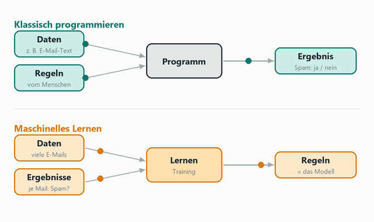
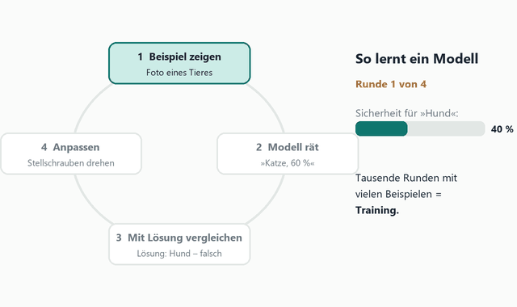
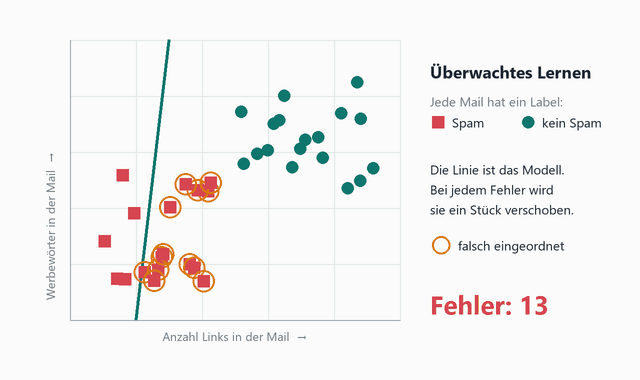
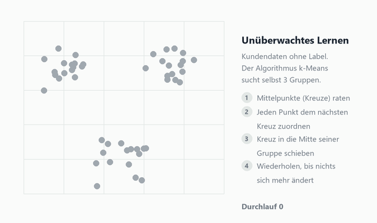
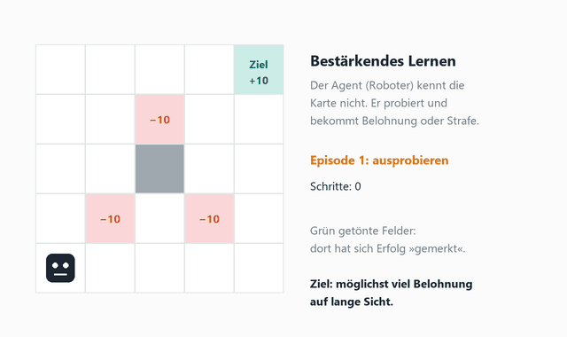
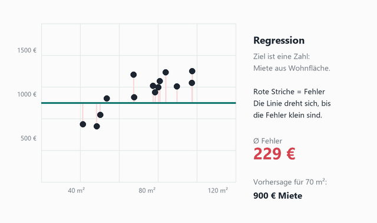

Was ist Künstliche Intelligenz – und wie lernt eine Maschine?
Dieser Kurs setzt kein Vorwissen voraus. Jeder Begriff wird zuerst mit einem Bild aus dem Alltag erklärt und danach fachlich sauber eingeordnet, so wie Sie ihn in der IHK-Prüfung brauchen. Die Animationen zeigen, was im Computer passiert.
KI ist schon längst in Ihrem Alltag
Begleiten wir eine Beispielperson, nennen wir sie Sabine, durch einen ganz normalen Tag. Morgens entsperrt sie ihr Handy mit dem Gesicht. Auf dem Weg zur Arbeit zeigt das Navi „Stau voraus, 12 Minuten länger“ – obwohl auf der Straße gerade noch alles fließt. Im Büro landen zwanzig Werbemails automatisch im Spam-Ordner, und nur eine echte Rechnung wird in den Posteingang einsortiert. In der Mittagspause schlägt der Streamingdienst eine Serie vor, die Sabine tatsächlich gefällt. Abends wird ihre Kreditkarte bei einem Einkauf im Ausland kurz gesperrt, weil die Bank die Zahlung für ungewöhnlich hält – ein Anruf klärt es, und die Karte funktioniert wieder.
Sabine hat an diesem Tag fünfmal KI benutzt, ohne ein einziges Mal darüber nachzudenken. Genau das ist der Punkt: KI ist keine ferne Zukunftstechnik, sondern Alltagstechnik. Sie arbeitet meist im Hintergrund.
Gesichtserkennung
Das Handy hat gelernt, wie Ihr Gesicht aussieht – auch mit Brille, Bart oder neuer Frisur. Es vergleicht nicht ein einzelnes Foto, sondern erkennt typische Merkmale.
Stauprognose
Das Navi kennt Millionen frühere Fahrten und schätzt daraus, wie lange Sie morgen um 8 Uhr brauchen werden.
Spamfilter
Er hat an sehr vielen Beispielen gelernt, wie Werbe- und Betrugsmails aussehen, und prüft jede neue Mail danach.
Empfehlungen
Menschen mit ähnlichem Geschmack haben das gesehen – also gefällt es Ihnen vermutlich auch.
Betrugserkennung
Die Bank kennt Ihr normales Kaufverhalten und schlägt Alarm, wenn eine Zahlung stark davon abweicht.
Übersetzer
Hat aus riesigen Textmengen gelernt, wie Sätze in anderen Sprachen gebaut werden.
Chat-Assistenten
Erzeugen neue Texte, indem sie Wort für Wort berechnen, was als Nächstes am besten passt.
Kamera und Foto-App
Erkennt Gesichter, sortiert Bilder nach „Strand“ oder „Hund“ und macht Hintergründe unscharf.
Woran erkennt man, dass hier KI am Werk ist?
In allen Beispielen steckt dasselbe Grundmuster, und es lohnt sich, es früh zu verstehen, denn es kehrt im ganzen Kurs wieder:
- Es gibt sehr viele frühere Beispiele. Millionen Fahrten, Milliarden Texte, Tausende markierte Spam-Mails.
- Aus diesen Beispielen leitet das System selbst Zusammenhänge ab. Kein Mensch hat aufgeschrieben, woran man Spam erkennt – das System hat es aus den Beispielen herausgefunden.
- Für einen neuen Fall gibt es eine Einschätzung. „Diese Mail ist vermutlich Spam.“ „Diese Fahrt dauert etwa 35 Minuten.“ Es ist eine Einschätzung, keine Gewissheit.
Vergleichen Sie das mit einem Gerät, das keine KI enthält: Ein Wecker klingelt zur eingestellten Zeit. Ein Taschenrechner berechnet 17 × 23 immer gleich. Eine Ampel mit Zeitschaltuhr schaltet nach festem Plan. Hier hat ein Mensch die Regel einmal festgelegt, und das Gerät befolgt sie stur. Es lernt nichts und passt sich nicht an.
Drei Beispiele aus der Arbeitswelt
Ein Paketdienst möchte seinen Kundinnen und Kunden sagen, wann das Paket ankommt. Früher stand dort immer „2 bis 4 Werktage“. Heute wertet ein System die Daten von Millionen früherer Lieferungen aus: Wochentag, Wetter, Region, Stückzahl am Verteilzentrum. Für ein Paket nach Hamburg am Donnerstag in der Vorweihnachtszeit sagt es „voraussichtlich Montag, 11 bis 14 Uhr“. Die Vorhersage ist genauer, weil das System Zusammenhänge kennt, die ein Mensch nie alle von Hand aufschreiben könnte.
In einer Klinik werden täglich Hunderte Röntgenbilder gemacht. Ein KI-System hat an vielen tausend Bildern gelernt, wie auffällige Stellen aussehen, und legt verdächtige Bilder nach oben auf die Liste der Ärztin. Die Ärztin entscheidet weiterhin selbst – aber sie sieht die dringenden Fälle zuerst. Die KI ersetzt hier nicht die Fachkraft, sondern unterstützt sie.
Ein Elektrobetrieb nutzt einen Chat-Assistenten, der aus drei Stichworten („Sanierung, Altbau, 80 m², Unterverteilung“) den Entwurf eines Angebotstextes erzeugt. Der Chef liest den Entwurf, korrigiert zwei Preise und schickt das Angebot raus. Die Zeitersparnis ist groß – aber die Verantwortung für den Inhalt bleibt beim Betrieb, denn der Assistent kann sich irren.
- „KI ist ein Roboter.“ Nein. Die meiste KI ist reine Software ohne Körper: ein Filter, eine Prognose, ein Textassistent. Roboter sind nur eine mögliche Anwendung.
- „KI ist neu.“ Das Forschungsgebiet gibt es seit den 1950er-Jahren (mehr dazu in Lektion 7). Neu ist, dass sie dank vieler Daten und schneller Rechner im Alltag funktioniert.
- „KI weiß alles.“ Nein. Jedes System ist für eine Aufgabe trainiert und kann sich irren. Ein Spamfilter kann keine Gesichter erkennen.
Was Sie nach diesem Modul können
- Die Begriffe KI, Maschinelles Lernen, Deep Learning und Generative KI sauber auseinanderhalten.
- Erklären, warum eine Maschine aus Beispielen lernen kann und was dabei passiert.
- Die drei Lernarten (überwacht, unüberwacht, bestärkend) unterscheiden und für einen Praxisfall die richtige wählen.
- Aufgaben als Regression, Klassifikation oder Clustering erkennen.
- Typische Prüfungsfragen zu diesem Themenblock sicher beantworten.
Jede Lektion ist gleich aufgebaut: Zuerst ein Alltagsbeispiel, dann die Erklärung Schritt für Schritt mit Beispielen aus verschiedenen Berufen, danach der Merksatz und – wo es passt – ein Prüfungstipp. Wenn Sie etwas nicht auf Anhieb verstehen, lesen Sie das Alltagsbeispiel noch einmal. Es ist kein Schmuck, sondern der leichteste Zugang zum Fachbegriff.
Was heißt das für Ihren Betrieb? Eine kleine Bestandsaufnahme
Nehmen Sie sich zehn Minuten und gehen Sie gedanklich durch Ihren Arbeitstag. Bei welchen Tätigkeiten werten Sie viele gleichartige Fälle aus und treffen jedes Mal eine ähnliche Einschätzung? Dort sind KI-Anwendungen am wahrscheinlichsten. Ein Beispiel aus einer Tischlerei: Zehnmal am Tag schätzt der Meister, wie lange ein Auftrag dauern wird. Er tut das aus Erfahrung – das ist genau die Art von Einschätzung, die ein System aus früheren Aufträgen lernen könnte.
| Tätigkeit im Betrieb | Enthält sie viele gleichartige Fälle? | Mögliche KI-Anwendung |
|---|---|---|
| Eingehende E-Mails dem richtigen Ansprechpartner zuordnen | Ja, täglich Dutzende | Textklassifikation |
| Dauer eines Auftrags schätzen | Ja, aus vielen früheren Aufträgen | Prognose (Regression) |
| Fehlerhafte Teile aussortieren | Ja, bei Serienfertigung | Bilderkennung |
| Die jährliche Steuererklärung des Betriebs | Nein, einmal im Jahr, feste Regeln | Eher klassische Software |
Frage (6 Punkte): Nennen Sie drei Beispiele für KI im Alltag und erklären Sie jeweils in einem Satz, woran man erkennt, dass es sich um KI handelt.
Musterlösung: (1) Spamfilter – er hat aus vielen markierten Mails gelernt und schätzt für jede neue Mail, ob sie Spam ist. (2) Gesichtserkennung am Handy – das System hat aus Bildern gelernt, wie Ihr Gesicht aussieht, und erkennt es in neuen Aufnahmen wieder. (3) Streaming-Empfehlungen – das System leitet aus dem Verhalten vieler Nutzer ab, was Ihnen gefallen könnte. Punkte: je Beispiel 1 Punkt, je Begründung 1 Punkt. Wichtig: Die Begründung nennt immer „gelernt aus vielen Beispielen“ und „Einschätzung für neue Fälle“.
Überall dort, wo ein Computer aus vielen früheren Beispielen eine Einschätzung für einen neuen Fall ableitet, steckt meistens maschinelles Lernen. Feste, von Menschen vorgegebene Regeln sind dagegen normale Software.
Kurz geprüft: Welches dieser Geräte enthält am ehesten KI?
Was bedeutet „Künstliche Intelligenz“?
Ein Taschenrechner nimmt uns Rechenarbeit ab. Eine Waschmaschine nimmt uns das Schrubben ab. KI nimmt uns eine andere Art von Arbeit ab: Dinge erkennen, einschätzen und entscheiden – also Aufgaben, bei denen wir Menschen normalerweise nachdenken müssen. Ein Beispiel: Beim Sortieren der Post erkennen Sie an Absender und Umschlag in Sekunden, was Werbung ist und was wichtig. Ein KI-System kann diese Art von Urteil in einem engen Bereich nachahmen.
Wichtig: Die KI „denkt“ dabei nicht wie wir. Sie rechnet. Sie hat kein Bewusstsein, keine Gefühle und keine Absichten. Das Wort „Intelligenz“ im Namen beschreibt nur, welche Art von Aufgabe sie löst – nicht, dass sie wie ein Mensch versteht.
Künstliche Intelligenz (KI) ist der Oberbegriff für Computersysteme, die Aufgaben lösen, für die Menschen Intelligenz brauchen: wahrnehmen, verstehen, schlussfolgern, entscheiden und lernen.
Dazu gehören auch Systeme, die gar nicht lernen, sondern nur fest einprogrammierte Regeln befolgen – zum Beispiel ein Expertensystem, das nach Wenn-dann-Regeln eine Diagnose vorschlägt. Die moderne KI dagegen lernt fast immer aus Daten.
Warum die Definition so weit gefasst ist
Es gibt keine einzige „offizielle“ Definition von Intelligenz, und deshalb auch keine eindeutige von KI. Die Fachwelt hat sich auf eine praktische Faustregel geeinigt: Löst ein Computer eine Aufgabe, für die bei einem Menschen Intelligenz nötig wäre, nennt man das KI. Das trifft auf einen Schachcomputer zu, auf eine Gesichtserkennung und auf einen Chat-Assistenten.
Dabei gibt es einen merkwürdigen Effekt, den man den „KI-Effekt“ nennt: Sobald eine Aufgabe zuverlässig gelöst ist, hören wir auf, sie „intelligent“ zu finden. Früher galt Schach als Gipfel der Intelligenz. Heute sagt man schulterzuckend „das ist halt ein Programm“. Gesichtserkennung am Handy ist uns so vertraut geworden, dass wir sie kaum noch als KI wahrnehmen.
Die vier Fähigkeiten, die man von „intelligenten“ Systemen erwartet
| Fähigkeit | Beim Menschen | Bei der KI | Beispiel |
|---|---|---|---|
| Wahrnehmen | Sehen, hören | Kamerabild, Mikrofon, Sensorwerte auswerten | Das Auto erkennt ein Stoppschild |
| Verstehen | Bedeutung erfassen | Muster in Daten erkennen, Text einordnen | Eine Kundenmail wird als „Beschwerde“ eingestuft |
| Entscheiden | Abwägen, wählen | Die wahrscheinlichste Antwort berechnen | Die Bank lehnt eine auffällige Zahlung ab |
| Lernen | Aus Erfahrung besser werden | Aus Beispieldaten die eigenen Stellschrauben anpassen | Der Spamfilter wird mit jeder markierten Mail treffsicherer |
KI arbeitet mit Wahrscheinlichkeiten
Das ist einer der wichtigsten Gedanken des ganzen Kurses. Eine KI sagt nicht „Das ist eine Katze“, sondern „Das ist mit 94 % Wahrscheinlichkeit eine Katze“. Dahinter steckt eine Rechnung, keine Gewissheit. Zwei Beispiele machen das greifbar:
Ein Bauteil läuft unter einer Kamera durch. Das System gibt zurück: „in Ordnung: 97 %, Kratzer: 2 %, Delle: 1 %“. Die Summe ergibt 100 %. Die Anlage lässt das Teil durch, weil „in Ordnung“ mit Abstand am wahrscheinlichsten ist. Käme „in Ordnung: 55 %, Kratzer: 45 %“ heraus, würde man das Teil lieber einer Person zur Prüfung geben, denn das System ist sich unsicher.
Bei dem Satzanfang „Der Himmel ist heute …“ rechnet ein Sprachmodell für jedes mögliche nächste Wort eine Wahrscheinlichkeit aus, zum Beispiel „blau“ 41 %, „grau“ 23 %, „bewölkt“ 18 %, „wolkenlos“ 9 % und so weiter. Es wählt eines davon aus. Deshalb liefert derselbe Chat-Assistent bei derselben Frage manchmal leicht unterschiedliche Antworten – und deshalb kann er sich auch einmal irren.
Aus dieser Wahrscheinlichkeitsarbeit folgen zwei praktische Regeln, die Sie im Beruf immer wieder brauchen: Ergebnisse einer KI müssen geprüft werden, besonders wenn viel davon abhängt. Und: Je klarer die Wahrscheinlichkeit, desto eher kann man dem Ergebnis trauen.
KI und „normale“ Software im Vergleich
| Normale Software | Lernende KI | |
|---|---|---|
| Woher kommen die Regeln? | Ein Mensch schreibt sie auf | Sie werden aus Beispielen abgeleitet |
| Ergebnis bei gleicher Eingabe | Immer gleich | Meist gleich, bei Sprachmodellen auch leicht verschieden |
| Fehler | Fehler im Programm lassen sich finden und beheben | Fehler entstehen aus Daten und lassen sich schwerer erklären |
| Beispiel | Mehrwertsteuer berechnen | Spam erkennen |
- „KI denkt und versteht wie ein Mensch.“ Nein, sie berechnet Wahrscheinlichkeiten auf Basis von Mustern. Sie kann sehr überzeugend klingen, ohne zu wissen, ob etwas wahr ist.
- „KI ist immer lernend.“ Nein. Der Oberbegriff KI umfasst auch Systeme mit festen Regeln. Nur das maschinelle Lernen lernt aus Daten (mehr in Lektion 3).
- „Wenn die KI sich sicher klingt, stimmt es.“ Nein. Die Sicherheit einer Aussage und ihre Richtigkeit sind zweierlei. Sprachmodelle formulieren auch falsche Dinge selbstsicher.
Was heißt das für Ihren Betrieb? Ergebnisse einer KI richtig lesen
Wenn Ihnen ein System ein Ergebnis mit Prozentzahl liefert, fragen Sie sich zwei Dinge: Wie hoch ist das Risiko, wenn das Ergebnis falsch ist? Und: Wie viel Sicherheit brauche ich dafür? Eine Filmempfehlung mit 60 % Trefferwahrscheinlichkeit ist völlig in Ordnung – schlimmstenfalls sehen Sie einen mittelmäßigen Film. Eine Krebsdiagnose mit 60 % ist es nicht. Bei einer Zahlungsfreigabe über 50 € genügen vielleicht 90 %, bei einer über 500.000 € verlangt man zusätzlich eine menschliche Prüfung.
Ein Betrieb sollte deshalb vorab festlegen, ab welchem Wert ein Ergebnis automatisch übernommen wird, ab welchem es einem Menschen zur Prüfung vorgelegt wird und ab welchem es verworfen wird. Diese drei Stufen („automatisch – prüfen – verwerfen“) sind in der Praxis Standard.
Frage (5 Punkte): Erklären Sie den Begriff Künstliche Intelligenz und nennen Sie je ein Beispiel für ein System mit festen Regeln und für ein lernendes System.
Musterlösung: Künstliche Intelligenz ist der Oberbegriff für Computersysteme, die Aufgaben lösen, für die Menschen Intelligenz brauchen, zum Beispiel wahrnehmen, verstehen, entscheiden und lernen (2 Punkte). Ein System mit festen Regeln ist ein Expertensystem, das nach Wenn-dann-Regeln eine Diagnose vorschlägt (1 Punkt). Ein lernendes System ist ein Spamfilter, der seine Regeln aus markierten Mails ableitet (1 Punkt). Zusatz für den fünften Punkt: Die Regeln stammen im ersten Fall von Menschen, im zweiten aus den Daten (1 Punkt).
KI = Systeme, die Denkaufgaben übernehmen. Nicht jede KI lernt – aber die moderne KI fast immer. Und: KI rechnet mit Wahrscheinlichkeiten, deshalb kann sie sich irren.
Kurz geprüft: Ist ein Schachcomputer, der nur nach festen, von Menschen programmierten Regeln spielt, eine KI?
KI, Maschinelles Lernen, Deep Learning, Generative KI
Denken Sie an russische Matroschka-Puppen: In der großen Puppe steckt eine kleinere, darin eine noch kleinere, ganz innen eine winzige. Genauso stecken die vier Begriffe dieser Lektion ineinander. Jeder innere Begriff ist ein Teilbereich des äußeren. Wer „Deep Learning“ sagt, meint damit immer auch „Maschinelles Lernen“ und „KI“ – aber nicht umgekehrt.
Auch ein Vergleich aus der Küche hilft: „Essen“ ist der Oberbegriff, „Backen“ ist eine Art zu kochen, „Brot backen“ ein Spezialfall davon, „Sauerteigbrot“ noch spezieller. Nicht jedes Essen ist gebacken, aber jedes Sauerteigbrot ist Essen.
Die vier Ebenen nacheinander
Ebene 1 – Künstliche Intelligenz (außen). Der weiteste Begriff: alles, was Denkaufgaben übernimmt, mit festen Regeln oder durch Lernen. Beispiel: Ein Navigationssystem sucht nach festen Verfahren den kürzesten Weg. Das ist eine Denkaufgabe, also KI – ganz ohne Lernen.
Ebene 2 – Maschinelles Lernen (ML). Hier schreibt kein Mensch die Regeln auf, sondern das System leitet sie selbst aus Beispielen ab. Beispiel: Ein Spamfilter bekommt 100.000 Mails, von denen jemand markiert hat, welche Spam sind. Daraus erkennt er selbst, welche Wörter, Absender und Muster typisch sind.
Ebene 3 – Deep Learning (DL). Eine besonders leistungsfähige Art des maschinellen Lernens, die mit künstlichen neuronalen Netzen aus vielen Schichten arbeitet (englisch „deep“ = tief, gemeint ist die Zahl der Schichten). Der große Vorteil: Das System lernt direkt aus „rohen“ Daten wie Bildern, Tönen oder Text und muss nicht vorher von Menschen mühsam auf die richtigen Merkmale hingewiesen werden. Beispiel: Gesichtserkennung am Handy.
Ebene 4 – Generative KI (innen). Sie erzeugt neue Inhalte – Texte, Bilder, Musik, Programmcode –, statt nur Daten zu bewerten oder einzuordnen. Sie beruht auf Deep Learning, nämlich auf sehr großen neuronalen Netzen. Beispiel: ein Chat-Assistent, der einen Brief entwirft, oder ein Bildgenerator.
| Begriff | Einfach gesagt | Beispiel |
|---|---|---|
| Künstliche Intelligenz | Alles, was Denkaufgaben übernimmt – auch mit festen Regeln | Schachcomputer mit Regeln, Expertensystem |
| Maschinelles Lernen (ML) | Das System lernt die Regeln selbst aus Beispielen | Spamfilter, Kreditwürdigkeitsprüfung |
| Deep Learning (DL) | ML mit „tiefen“ künstlichen neuronalen Netzen aus vielen Schichten; lernt direkt aus Bildern, Tönen oder Text | Gesichtserkennung, Spracherkennung |
| Generative KI | Erzeugt neue Inhalte statt nur zu bewerten | Chat-Assistent, Bildgenerator |
Wie ordne ich ein System richtig ein? Zwei Fragen genügen
- Hat ein Mensch die Regeln aufgeschrieben, oder hat das System sie aus Beispielen abgeleitet? Aufgeschrieben → KI, aber kein maschinelles Lernen. Abgeleitet → maschinelles Lernen.
- Erzeugt das System etwas Neues (Text, Bild, Ton)? Ja → Generative KI. Nein → es bewertet oder ordnet ein.
Ob zusätzlich „Deep Learning“ zutrifft, entscheidet die Technik dahinter: Arbeitet das System mit einem mehrschichtigen neuronalen Netz, ist es Deep Learning. Das wissen Sie in der Praxis meist daran, dass es Bilder, Sprache oder freien Text verarbeitet.
Eine Versicherung setzt vier Systeme ein. Ordnen Sie sie ein:
- System A prüft Schadensmeldungen nach einem Katalog aus 120 Wenn-dann-Regeln, den Fachleute geschrieben haben. → KI, aber kein ML (Expertensystem, Regeln von Menschen).
- System B schätzt aus 200.000 früheren Verträgen, wie wahrscheinlich eine Kündigung ist. → Maschinelles Lernen, vermutlich kein Deep Learning.
- System C erkennt auf Fotos von Autoschäden automatisch Beulen und Kratzer. → Deep Learning (Bilder, neuronales Netz).
- System D schreibt aus Stichworten einen Antwortbrief an die Kundschaft. → Generative KI.
- „KI und ChatGPT sind dasselbe.“ Nein. Chat-Assistenten sind nur der innerste Kreis, also ein Ausschnitt der Generativen KI. Ein Spamfilter, eine Gesichtserkennung und eine Absatzprognose sind ebenfalls KI, aber keine Chat-Assistenten.
- „Deep Learning ist tiefes Verständnis.“ Nein. „Tief“ bezieht sich nur auf die vielen Schichten des Netzes, nicht auf Verstehen. Mehr dazu in Modul 7.
- „Maschinelles Lernen heißt, der Computer lernt von allein dazu, sobald er im Einsatz ist.“ Meist nein. Viele Modelle werden einmal trainiert und dann unverändert eingesetzt; erst ein neues Training bringt neues Wissen hinein.
Was heißt das für Ihren Betrieb? Wissen, womit man es zu tun hat
Im Alltag begegnen Ihnen die vier Begriffe oft in Verkaufsgesprächen: „Unsere Lösung nutzt KI.“ Fragen Sie nach, welche Ebene gemeint ist. Handelt es sich um feste Regeln (dann spricht man besser von Automatisierung), um maschinelles Lernen auf Ihren Daten, um Deep Learning auf Bildern oder um ein Sprachmodell? Das bestimmt, was das System braucht und was es kostet: Regeln brauchen Fachwissen, maschinelles Lernen braucht Daten, Deep Learning braucht viele Daten und Rechenleistung, Generative KI braucht meist einen Anbieter mit großen Modellen und klare Regeln für den Umgang mit Datenschutz.
| Ebene | Was Sie vor allem brauchen | Typische Frage im Betrieb |
|---|---|---|
| KI mit Regeln | Fachleute, die Regeln aufschreiben | Sind die Regeln vollständig und aktuell? |
| Maschinelles Lernen | Genug gute Beispieldaten mit Label | Haben wir die Daten? Wer pflegt sie? |
| Deep Learning | Viele Daten, Rechenleistung | Rechnen wir selbst oder nutzen wir einen Dienst? |
| Generative KI | Ein Modell, klare Regeln, Prüfung der Ausgaben | Welche Daten dürfen wir eingeben? |
Frage (6 Punkte): Grenzen Sie die Begriffe Künstliche Intelligenz, Maschinelles Lernen und Deep Learning voneinander ab. Nennen Sie je ein Beispiel.
Musterlösung: KI ist der Oberbegriff für Systeme, die Denkaufgaben übernehmen, auch mit festen Regeln – Beispiel: Expertensystem (2 Punkte). Maschinelles Lernen ist ein Teilgebiet der KI, bei dem das System die Regeln selbst aus Beispieldaten ableitet – Beispiel: Spamfilter (2 Punkte). Deep Learning ist ein Teilgebiet des maschinellen Lernens, das tiefe neuronale Netze mit vielen Schichten nutzt – Beispiel: Gesichtserkennung (2 Punkte). Die Begriffe sind ineinander verschachtelt: DL ⊂ ML ⊂ KI.
Jedes Deep Learning ist maschinelles Lernen, und jedes maschinelle Lernen ist KI – aber nicht umgekehrt. Generative KI sitzt ganz innen.
Fragen wie „Ordnen Sie die Begriffe vom allgemeinsten zum speziellsten“ kommen häufig. Die Reihenfolge ist immer: KI → ML → DL → Generative KI. Auch die Frage „Ist jedes KI-System maschinelles Lernen?“ (Antwort: nein) taucht gern auf.
Kurz geprüft: Ein Expertensystem diagnostiziert Fehler nach 300 Regeln, die Techniker aufgeschrieben haben. Wie ist es einzuordnen?
Der große Unterschied: Regeln schreiben oder Regeln lernen
Das Kochrezept: Sie geben jemandem eine genaue Anleitung: 200 g Mehl, 2 Eier, 20 Minuten bei 180 Grad. Wer sich daran hält, bekommt jedes Mal denselben Kuchen. Das ist klassisches Programmieren – ein Mensch denkt sich die Regeln aus und schreibt sie auf.
Das Kind und die Tiere: Einem Kind erklärt niemand per Regel, was einen Hund von einer Katze unterscheidet. Es sieht viele Hunde und Katzen, jemand sagt jeweils „Hund“ oder „Katze“, und irgendwann erkennt es neue Tiere selbst – auch Rassen, die es noch nie gesehen hat. Das ist maschinelles Lernen: Die Regeln entstehen aus den Beispielen.
Klassische Programmierung: Daten + Regeln → Ergebnis.
Maschinelles Lernen: Daten + bekannte Ergebnisse → Regeln. Diese gelernten Regeln nennt man das Modell. Anschließend wird das Modell auf neue Daten angewendet, um Ergebnisse vorherzusagen.

Die Umkehrung verstehen
Der Kern dieser Lektion ist eine Umkehrung. Beim klassischen Programmieren stecken Sie Regeln und Daten hinein und bekommen Antworten heraus. Beim maschinellen Lernen stecken Sie Daten und Antworten hinein und bekommen Regeln heraus. Diese Regeln sind dann ein Werkzeug, das auch für neue Daten Antworten liefert.
Warum ist das nützlich? Weil es viele Aufgaben gibt, bei denen wir die Regeln gar nicht aufschreiben können. Versuchen Sie einmal, in Wenn-dann-Sätzen zu beschreiben, woran man ein Gesicht erkennt. Es gibt so viele Ausnahmen, dass die Liste nie fertig wird. Ein Mensch erkennt Gesichter mühelos, kann aber nicht erklären, wie. Genau hier hilft das Lernen aus Beispielen.
Drei Beispiele im Vergleich
- Klassisch: Ein Mensch schreibt: „Wenn die Mail das Wort ‚Gewinn‘ enthält und mehr als drei Links hat, dann Spam.“ Die Regel funktioniert zunächst. Dann schreiben die Absender „G3winn“ oder „Gewiinn“ – die Regel erkennt es nicht mehr, und jemand muss neue Regeln schreiben. Das ist ein Wettlauf, den der Mensch verliert.
- Mit ML: Das System bekommt 100.000 Mails, bei denen schon markiert ist, ob sie Spam sind. Es findet selbst Hunderte Merkmale, die zusammen auf Spam hindeuten (Absenderadresse, Tippfehler, Zahl der Links, Uhrzeit …). Mit neuen markierten Beispielen kann man es nachtrainieren, wenn sich die Maschen ändern.
Klassisch: Man schreibt eine Formel auf, etwa „Neupreis minus 12 % pro Jahr minus 0,05 € pro gefahrenem Kilometer“. Das ist eine grobe Faustregel. Ob sie stimmt, hängt von Marke, Zustand und Ausstattung ab – und die Formel kennt das alles nicht.
Mit ML: Das System bekommt 5.000 tatsächlich verkaufte Autos mit allen Angaben und dem erzielten Preis. Es findet selbst heraus, dass bei Kleinwagen der Kilometerstand stark zählt, bei Sportwagen eher die Ausstattung, und dass Dieselmodelle in manchen Jahren schneller an Wert verloren haben als Benziner. Solche Feinheiten schreibt niemand von Hand in eine Formel.
Eine Rechnung über 200 € netto bekommt 19 % Umsatzsteuer, also 38 €. Die Regel ist klar, kurz und ändert sich nur durch Gesetze. Hier wäre es unsinnig, ein Modell mit Beispielrechnungen zu trainieren: Es wäre teurer, ungenauer und schwerer zu überprüfen als eine einzige Zeile Programmcode. Klassisches Programmieren ist hier eindeutig besser.
Wann lohnt sich maschinelles Lernen? Drei Bedingungen
- Die Regeln sind zu zahlreich oder zu kompliziert, um sie aufzuschreiben. Gesichter erkennen, Sprache verstehen, Schäden auf Fotos finden.
- Die Regeln ändern sich ständig. Betrugsmaschen, Moden, Kundenverhalten. Ein Modell kann mit neuen Daten neu trainiert werden, während ein Regelwerk jedes Mal von Hand angepasst werden müsste.
- Es gibt genug Beispieldaten in guter Qualität. Ohne Beispiele kann nichts gelernt werden. Das ist die Bedingung, die in der Praxis am häufigsten scheitert.
Wenn ein Problem mit wenigen, klaren und stabilen Regeln lösbar ist, ist klassische Programmierung besser: billiger, nachvollziehbar und fehlerfrei. Ein häufiger Anfängerfehler ist, KI einzusetzen, weil sie modern ist – und nicht, weil das Problem sie braucht.
Was maschinelles Lernen kostet
Ein Modell fällt nicht vom Himmel. Man braucht Daten (sammeln, bereinigen, markieren), Rechenleistung für das Training, Fachleute, die das Modell bewerten, und später Pflege, weil sich die Welt ändert. Regelbasierte Software ist beim Start oft schneller fertig. Das Lernen lohnt sich erst, wenn die Aufgabe so komplex ist, dass Regeln nicht mehr ausreichen.
- „Maschinelles Lernen löst jedes Problem besser als Regeln.“ Nein. Bei klaren, stabilen Regeln ist klassische Software überlegen.
- „Das Modell programmiert sich selbst.“ Das Modell wird nicht von Menschen Regel für Regel geschrieben, aber Menschen wählen Daten, Verfahren und Bewertung aus. Viele Entscheidungen bleiben menschlich.
- „Mehr Daten lösen alles.“ Mehr Daten helfen nur, wenn sie zur Aufgabe passen und korrekt sind. Fehlerhafte Daten werden mitgelernt.
Was heißt das für Ihren Betrieb? Die Vorab-Prüfung vor dem ersten Projekt
Bevor ein Betrieb Geld in ein KI-Projekt steckt, lohnt sich eine kurze Prüfung mit fünf Fragen. Je mehr Sie mit „Ja“ beantworten, desto eher lohnt sich maschinelles Lernen:
- Lässt sich die Entscheidung nicht sinnvoll in wenigen Regeln aufschreiben?
- Treffen wir sehr viele gleichartige Entscheidungen (täglich Hunderte oder mehr)?
- Haben wir Daten aus der Vergangenheit, und kennen wir bei diesen Daten das tatsächliche Ergebnis?
- Ist ein gelegentlicher Fehler verkraftbar, oder lässt er sich durch eine Prüfung abfangen?
- Ändern sich die Zusammenhänge so, dass feste Regeln schnell veralten würden?
Beispiel: Ein Handwerksbetrieb will die Dauer von Aufträgen schätzen. Frage 1: Ja, viele Einflüsse. Frage 2: nein, nur zehn Aufträge pro Woche – das spricht gegen aufwendiges ML. Frage 3: Daten gibt es in alten Aufträgen, aber ohne Erfassung der tatsächlichen Dauer. Ergebnis: Erst die Zeiten erfassen, später neu bewerten.
Frage (6 Punkte): Erklären Sie den Unterschied zwischen klassischer Programmierung und maschinellem Lernen. Nennen Sie je ein Beispiel.
Musterlösung: Bei der klassischen Programmierung schreibt der Mensch die Regeln; aus Daten und Regeln entsteht das Ergebnis (Daten + Regeln → Ergebnis) – Beispiel: Berechnung der Umsatzsteuer (3 Punkte). Beim maschinellen Lernen leitet das System die Regeln selbst aus Daten und bekannten Ergebnissen ab (Daten + Ergebnisse → Regeln, das Modell) – Beispiel: Spamfilter, der aus markierten Mails lernt (3 Punkte).
Klassisch: Mensch schreibt die Regeln. ML: Die Maschine leitet die Regeln aus Beispielen ab. ML lohnt sich bei komplizierten, sich ändernden Regeln – und wenn es genug gute Daten gibt.
Eine beliebte Frage lautet: „Wann würden Sie bewusst kein maschinelles Lernen einsetzen?“ Gute Antwort: bei wenigen klaren, stabilen Regeln (z. B. Steuerberechnung), bei zu wenigen oder schlechten Daten und wenn jede Entscheidung vollständig nachvollziehbar sein muss.
Kurz geprüft: Wofür ist klassische Programmierung besser geeignet als maschinelles Lernen?
Wie lernt eine Maschine? Die wichtigsten Begriffe
Stellen Sie sich eine Schülerin vor, die für eine Matheklausur übt. Sie rechnet Übungsaufgaben und schaut danach ins Lösungsheft. Bei jeder Aufgabe, die sie falsch gelöst hat, überlegt sie, was sie anders machen muss, und versucht es beim nächsten Mal besser. Nach Hunderten Aufgaben beherrscht sie das Verfahren. In der Klausur bekommt sie neue Aufgaben – und zeigt, ob sie das Prinzip verstanden oder nur die Übungsaufgaben auswendig gelernt hat.
Fast alles, was Sie in diesem Kurs über maschinelles Lernen hören, lässt sich auf diese Geschichte zurückführen. Behalten Sie sie im Hinterkopf – sie erklärt die Fachbegriffe, die jetzt kommen.

Die Begriffe der Reihe nach
Nehmen wir als durchgehendes Beispiel den Preis eines Gebrauchtwagens. Ein Autohändler möchte vorhersagen, für wie viel er ein Auto verkaufen kann.
| Fachbegriff | In der Schul-Analogie | Bedeutung | Beispiel Gebrauchtwagenpreis |
|---|---|---|---|
| Daten / Datensatz | Alle Übungsaufgaben | Sammlung von Beispielen | 5.000 verkaufte Autos |
| Merkmal (Feature) | Angaben in der Aufgabe | Eingabeinformationen eines Beispiels | Alter, Kilometerstand, Marke, PS |
| Label (Zielwert) | Lösung im Lösungsheft | Die bekannte richtige Antwort | Tatsächlicher Verkaufspreis |
| Modell | Das, was die Schülerin verstanden hat | Gelernte Regeln mit vielen Stellschrauben (Parametern) | Formel, die aus Merkmalen einen Preis berechnet |
| Training | Üben mit Lösungsheft | Stellschrauben so anpassen, dass die Fehler kleiner werden | Rechnen, bis die Preise gut passen |
| Vorhersage (Inferenz) | Die Klausur | Modell auf neue, unbekannte Daten anwenden | Preis für ein Auto schätzen, das gerade reinkommt |
| Testdaten | Klausuraufgaben, die man vorher nicht kannte | Zurückgehaltene Beispiele zur ehrlichen Bewertung | 1.000 Autos, die nicht im Training waren |
Was passiert beim Training? Ein Rechenbeispiel zum Mitverfolgen
Damit das nicht abstrakt bleibt, rechnen wir ein ganz kleines Modell von Hand durch. Ein Vermieter will Mieten vorhersagen. Er hat drei Wohnungen als Beispiele (Merkmal: Wohnfläche, Label: tatsächliche Monatsmiete):
| Wohnung | Wohnfläche (Merkmal) | Miete (Label) |
|---|---|---|
| A | 40 m² | 520 € |
| B | 60 m² | 700 € |
| C | 80 m² | 960 € |
Das Modell ist hier eine ganz einfache Regel mit einer Stellschraube: Miete = Preis je m² mal Wohnfläche. Die Stellschraube ist der Preis je Quadratmeter. Wir probieren zwei Einstellungen aus und messen jedes Mal den Fehler, also den Abstand zwischen Vorhersage und tatsächlicher Miete.
- Einstellung 1: 10 € je m². Vorhersagen: A 400 €, B 600 €, C 800 €. Fehler: |520 − 400| = 120 · |700 − 600| = 100 · |960 − 800| = 160. Durchschnittlicher Fehler (120 + 100 + 160) : 3 ≈ 127 €.
- Einstellung 2: 12 € je m². Vorhersagen: A 480 €, B 720 €, C 960 €. Fehler: |520 − 480| = 40 · |700 − 720| = 20 · |960 − 960| = 0. Durchschnittlicher Fehler (40 + 20 + 0) : 3 = 20 €.
- Einstellung 2 ist deutlich besser. Training heißt: Die Stellschraube so lange verstellen, bis der Fehler klein ist. Ein Computer probiert das nicht wahllos, sondern mit einem Rechenverfahren, das die Richtung der Verbesserung ausrechnet (mehr dazu im Gradientenabstieg in Modul 2 und in Modul 7).
Echte Modelle haben nicht eine, sondern Tausende bis Milliarden Stellschrauben – man nennt sie Parameter. Das Prinzip ist aber dasselbe.
Daten als Träger von Wissen
In der Prüfungsordnung heißt es „Daten als Repräsentanten von Wissen“. Gemeint ist: Das Wissen, wie viel ein Auto wert ist, steht in keinem Buch. Es steckt in den vielen tatsächlichen Verkäufen. Das Modell holt dieses Wissen aus den Daten heraus. Daraus folgt auch: Sind die Daten falsch, einseitig oder veraltet, lernt das Modell genau diese Fehler mit. Fachleute sagen dazu „Garbage in, garbage out“ – Müll rein, Müll raus.
Auswendiglernen ist kein Lernen: Training und Test
Eine Schülerin, die nur die Lösungen der Übungsaufgaben auswendig lernt, fällt in der Klausur durch. Bei Modellen heißt das Overfitting (Überanpassung). Darum teilt man die vorhandenen Daten auf: Mit den meisten Beispielen wird trainiert, ein Teil wird zurückgehalten und erst am Schluss zum Testen benutzt.
Der Händler hat 1.000 verkaufte Autos. Er trainiert mit 800 und hält 200 zurück. Ergebnis: Auf den 800 Trainingsautos liegt das Modell im Schnitt nur 4 % daneben, auf den 200 neuen Autos aber 18 %. Der große Abstand ist ein Warnsignal: Das Modell hat die Trainingsautos „auswendig gelernt“ und verallgemeinert schlecht. Hätte der Händler nur auf den Trainingsdaten gemessen, würde er sich fälschlich sicher fühlen. Mehr dazu in Modul 6.
- Merkmal und Label verwechseln. Das Label ist immer die Antwort, die später vorhergesagt werden soll – hier der Preis. Alles andere sind Merkmale.
- „Das Modell speichert alle Beispiele.“ Nein. Es speichert gelernte Stellschrauben-Werte, keine Kopie der Daten (auch wenn es manchmal Teile auswendig lernt – dann ist das ein Fehler).
- Auf den Trainingsdaten testen. Das gibt ein zu gutes Bild. Ehrlich bewertet wird nur mit Daten, die das Modell nie gesehen hat.
Was heißt das für Ihren Betrieb? Fachbegriffe im Projektgespräch
Wenn Sie mit einer Datenabteilung oder einem Dienstleister sprechen, hören Sie genau diese Begriffe. Übersetzen Sie sie zurück ins Alltagsbild: „Unser Trainingsdatensatz ist zu klein“ heißt „Die Übungsaufgaben reichen nicht“. „Das Modell überanpasst“ heißt „Die Schülerin hat auswendig gelernt“. „Die Merkmale sind unvollständig“ heißt „In der Aufgabenstellung fehlen Angaben, die für die Lösung wichtig wären“. Wer das übersetzen kann, versteht jedes Projektgespräch.
Und stellen Sie drei Fragen, die jedes Vorhaben voranbringen: Was ist das Label? (Was soll vorhergesagt werden?) Welche Merkmale haben wir wirklich? Welche Daten behalten wir zum Testen zurück?
Frage (7 Punkte): Ein Unternehmen will vorhersagen, ob Kunden ihren Vertrag kündigen. Nennen Sie je zwei mögliche Merkmale, das Label und erklären Sie, wozu man Testdaten braucht.
Musterlösung: Merkmale: Vertragslaufzeit, Anzahl der Beschwerden, monatliche Nutzung, Alter des Kunden (2 Punkte für zwei genannte). Label: Ob der Kunde tatsächlich gekündigt hat (2 Punkte). Testdaten: Daten, die das Modell beim Training nie gesehen hat; sie zeigen ehrlich, wie gut das Modell bei neuen Kunden funktioniert, und decken Overfitting auf (3 Punkte).
Training = Stellschrauben anpassen, bis die Fehler auf den Beispielen klein sind. Ob das Modell etwas taugt, zeigt sich erst an neuen Daten.
Kurz geprüft: Bei einer Vorhersage, ob ein Kunde kündigt – was ist das Label?
Schwache KI, starke KI – und was es (noch) nicht gibt
Ein Schachprogramm schlägt jeden Menschen im Schach. Aber fragen Sie es, wie man ein Ei kocht, und es versteht die Frage nicht einmal – es kann nur Schach. Ein Mensch dagegen spielt vielleicht nur mittelmäßig Schach, kocht aber ein Ei, schreibt eine Postkarte, tröstet einen Freund und lernt im nächsten Monat einen ganz neuen Beruf. Das Schachprogramm ist ein extremer Spezialist, der Mensch ein Allrounder.
Dieser Unterschied zwischen Spezialist und Allrounder ist der Kern der Unterscheidung von schwacher und starker KI.
| Begriff | Bedeutung | Gibt es das? |
|---|---|---|
| Schwache KI (engl. Narrow AI) | Löst eine klar umrissene Aufgabe sehr gut, kann aber nichts anderes | Ja – alle heutigen Systeme, auch Chat-Assistenten |
| Starke KI (engl. Artificial General Intelligence, AGI) | Allgemeine Intelligenz auf menschlichem Niveau in allen Bereichen | Nein, bisher nicht erreicht |
| Superintelligenz | Übertrifft Menschen in allen Bereichen deutlich | Nein, rein hypothetisch |
Schwach heißt nicht „schlecht“
Das Wort „schwach“ führt in die Irre. Gemeint ist nicht, dass die Systeme wenig leisten. Eine schwache KI kann in ihrem Bereich besser sein als jeder Mensch: Sie erkennt Hautkrebs auf Fotos, übersetzt in Sekunden zwischen 100 Sprachen oder findet in Millionen Bankbuchungen die verdächtige. „Schwach“ bezieht sich auf die Breite, nicht auf die Leistung: Die Fähigkeit bleibt auf eine Aufgabe oder einen engen Bereich beschränkt.
Was „allgemein“ bedeuten würde
Eine starke KI (AGI) müsste wie ein Mensch viele unterschiedliche Aufgaben bewältigen, aus wenigen Beispielen Neues lernen, Wissen aus einem Bereich auf einen anderen übertragen und mit unbekannten Situationen sinnvoll umgehen. Das kann heute kein System. Ob und wann das gelingt, ist unter Fachleuten stark umstritten.
Ein Kamerasystem erkennt auf Metallteilen Kratzer mit 99 % Trefferquote – besser als das menschliche Auge nach acht Stunden Schicht. Wird das System aber vor einen Karton mit Schrauben gestellt, kann es nichts damit anfangen. Es wurde für eine Aufgabe trainiert. Soll es etwas anderes leisten, braucht es neue Daten und ein neues Training. Das ist typisch für schwache KI.
Ein Sprachmodell kann Gedichte schreiben, Programmcode erklären und Rezepte vorschlagen. Das wirkt wie breites Können. Trotzdem gilt es fachlich als schwache KI: Es wurde auf eine Aufgabe trainiert, nämlich Text zu erzeugen, der zum Vorangegangenen passt. Es hat kein Bewusstsein, keine eigenen Ziele und weiß nicht, ob seine Aussagen stimmen. Fragt man es nach einem Ereignis von gestern, das nicht in den Trainingsdaten steckt, erfindet es im Zweifel etwas Plausibles.
Eine Schlagzeile lautet: „KI besteht Anwaltsprüfung – Anwälte bald überflüssig?“ Drei Fragen helfen bei der Einordnung: Welche Aufgabe genau hat die KI gelöst (ein Test mit Multiple-Choice-Fragen)? Unter welchen Bedingungen (vorbereitete Aufgaben, kein echter Mandant, keine Verantwortung)? Was gehört noch zum Beruf (Mandanten beraten, Fristen im Blick behalten, vor Gericht auftreten)? Meist zeigt sich: Die Leistung ist real, aber ein enger Ausschnitt. Das ist schwache KI.
Warum diese Unterscheidung für die Praxis wichtig ist
- Erwartungen richtig setzen. Wer glaubt, ein System „versteht“ seinen Betrieb, plant falsch. Es kann nur das, wofür es trainiert wurde.
- Grenzen kennen. Außerhalb des Trainingsbereichs sind die Ergebnisse unzuverlässig.
- Verantwortung behalten. Weil kein System allgemein „weiß“, was richtig ist, bleibt die Verantwortung beim Menschen und beim Unternehmen.
Und woran kann man die Debatte in der Prüfung festmachen? Ob eine starke KI einmal möglich ist, ist eine Zukunftsfrage. Prüfungsrelevant ist die Definition: Alles, was heute im Einsatz ist, ist schwache KI.
- „Chat-Assistenten sind starke KI, weil sie so vielseitig sind.“ Nein. Vielseitig wirken sie, weil sie über sehr viele Themen Text erzeugen können; fachlich bleiben sie schwache KI.
- „Schwache KI ist ungefährlich.“ Nein. Auch schwache KI kann Schaden anrichten, etwa durch Fehlentscheidungen oder Missbrauch. Risiken sind kein Privileg der starken KI (mehr dazu in Modul 10).
- „Superintelligenz gibt es schon.“ Nein, sie ist rein hypothetisch.
Was heißt das für Ihren Betrieb? Versprechen und Wirklichkeit unterscheiden
Anbieter werben gern mit Sätzen wie „Unsere KI versteht Ihr Geschäft“. Aus der Unterscheidung von schwacher und starker KI folgt: Kein System versteht Ihr Geschäft. Es erkennt Muster in den Daten, mit denen es gefüttert wurde. Prüfen Sie daher bei jedem Angebot: Für welche Aufgabe wurde es trainiert? Mit welchen Daten? Wie gut ist es dort, gemessen an unabhängigen Tests? Was passiert, wenn der Fall außerhalb des Trainingsbereichs liegt?
Ein Praxisbeispiel: Ein Händler kauft ein System, das Kundenanfragen automatisch beantwortet. Es wurde auf Anfragen zu Retouren und Lieferzeiten trainiert und beantwortet diese sehr gut. Fragt jemand nach einer Sonderanfertigung, antwortet es selbstbewusst – aber falsch. Hier hätte eine Regel „Bei unbekannten Themen an einen Menschen weiterleiten“ den Fehler vermieden.
Frage (5 Punkte): Erklären Sie die Begriffe schwache KI und starke KI. Ordnen Sie einen Chat-Assistenten ein und begründen Sie.
Musterlösung: Schwache KI löst eine klar umrissene Aufgabe sehr gut, kann aber nichts anderes (2 Punkte). Starke KI (AGI) hätte allgemeine Intelligenz auf menschlichem Niveau in allen Bereichen und existiert bisher nicht (2 Punkte). Ein Chat-Assistent ist schwache KI: Er wurde auf Textgenerierung trainiert, hat kein Bewusstsein und keine eigenen Ziele, auch wenn er vielseitig wirkt (1 Punkt).
Alles, was heute im Einsatz ist, ist schwache KI – ein Spezialist für eine Aufgabe, oft besser als Menschen, aber ohne breites Verständnis. Starke KI ist ein Forschungsziel, kein Produkt.
Kurz geprüft: Ein Chat-Assistent kann zu sehr vielen Themen Texte schreiben. Ist er damit eine starke KI?
Eine kurze Geschichte der KI
Vielleicht kennen Sie das von Moden oder von Börsenkursen: Erst steigt alles, alle sind begeistert, dann kommt die Ernüchterung, dann ein neuer Anlauf. Genauso verlief die Geschichte der KI. Die Idee ist über 70 Jahre alt. Es gab Phasen großer Begeisterung und Phasen, in denen kaum jemand Geld dafür ausgeben wollte – die sogenannten „KI-Winter“.
Der aktuelle Boom kam erst, als drei Dinge zusammenkamen: viele Daten (durch das Internet), schnelle Rechner (vor allem Grafikchips) und bessere Lernverfahren. Fehlte eines der drei, scheiterten frühere Versuche.
Die Geschichte in sechs Etappen
1. Die Idee entsteht (1950–1956). 1950 stellte der britische Mathematiker Alan Turing die Frage, ob Maschinen denken können, und schlug einen Test vor: Wenn ein Mensch im schriftlichen Gespräch nicht mehr sagen kann, ob er mit einer Maschine oder einem Menschen schreibt, hat die Maschine den Test bestanden (Turing-Test). 1956 trafen sich Forschende in Dartmouth (USA) zu einem Sommerworkshop; dort wurde der Begriff „Artificial Intelligence“ geprägt. Sie waren sicher, in wenigen Jahren große Fortschritte zu erzielen.
2. Erste Erfolge und der erste Dämpfer (1958–1970er). 1958 baute Frank Rosenblatt das Perzeptron, ein erstes künstliches Neuron, das aus Beispielen lernen konnte. Die Begeisterung war groß, doch die Rechner waren schwach und die Daten rar. Als die Versprechen nicht gehalten wurden, kürzten Geldgeber die Mittel: der erste KI-Winter.
3. Expertensysteme (1980er). Statt zu lernen, setzte man nun auf Wissen von Fachleuten, das in Wenn-dann-Regeln festgehalten wurde. Unternehmen nutzten solche Systeme zum Beispiel, um Computer-Konfigurationen zusammenzustellen oder Diagnosen vorzuschlagen. Das funktionierte in engen Fachgebieten, wurde aber bei wachsendem Regelwerk unübersichtlich und teuer in der Pflege. Es folgte der zweite KI-Winter.
4. Lernen kehrt zurück (1986–1990er). 1986 wurde die Backpropagation bekannt, ein Verfahren, mit dem sich mehrschichtige neuronale Netze trainieren lassen. 1997 schlug der IBM-Rechner Deep Blue den Schachweltmeister Garri Kasparow – mit riesiger Rechenleistung und Suchverfahren, noch nicht mit Deep Learning.
5. Der Durchbruch des Deep Learning (2012). Beim Bilderkennungswettbewerb ImageNet gewann das neuronale Netz AlexNet mit großem Abstand, trainiert auf Grafikchips und Millionen Bildern. Von da an setzte sich Deep Learning in der Bild-, Sprach- und Texterkennung durch. 2016 besiegte das Programm AlphaGo den Go-Weltklassespieler Lee Sedol – ein Spiel, das man wegen seiner Vielfalt lange für zu schwer gehalten hatte.
6. Transformer und Generative KI (ab 2017). 2017 erschien die Transformer-Architektur („Attention Is All You Need“), die Grundlage heutiger Sprachmodelle. Ab Ende 2022 wurden Chat-Assistenten und Bildgeneratoren für Millionen Menschen frei zugänglich. Seitdem hält KI Einzug in Büros, Werkstätten und Schulen.
- 1950Turing-TestAlan Turing fragt: Kann eine Maschine im Gespräch von einem Menschen nicht zu unterscheiden sein?
- 1956Dartmouth-KonferenzDer Begriff „Artificial Intelligence“ wird geprägt. Geburtsstunde des Fachgebiets.
- 1958PerzeptronFrank Rosenblatt baut das erste lernfähige künstliche Neuron.
- 1970erErster KI-WinterDie Versprechen waren zu groß, Rechner zu schwach. Forschungsgelder werden gestrichen.
- 1980erExpertensystemeRegelbasierte KI in Unternehmen, z. B. für Diagnosen. Danach der zweite KI-Winter.
- 1986BackpropagationEin Rechenverfahren, mit dem mehrschichtige neuronale Netze trainiert werden können, wird populär.
- 1997Deep BlueEin IBM-Rechner schlägt Schachweltmeister Kasparow – mit Suche und Regeln, nicht mit Deep Learning.
- 2012Durchbruch Deep LearningDas Netz „AlexNet“ gewinnt den Bilderkennungswettbewerb ImageNet mit großem Abstand.
- 2017TransformerNeue Architektur („Attention Is All You Need“), Grundlage heutiger Sprachmodelle.
- ab 2022Generative KI für alleChat-Assistenten und Bildgeneratoren werden von Millionen Menschen genutzt.
Warum es erst jetzt funktioniert: die drei Zutaten
| Zutat | Was sich verändert hat | Warum es wichtig ist |
|---|---|---|
| Daten | Internet, Smartphones und Sensoren erzeugen riesige Mengen an Texten, Bildern und Messwerten | Lernen braucht Beispiele – je mehr und je besser, desto leistungsfähiger das Modell |
| Rechenleistung | Grafikchips (GPUs) können sehr viele Rechenschritte gleichzeitig ausführen | Das Training großer Netze würde auf normalen Prozessoren Jahre dauern |
| Algorithmen | Bessere Lernverfahren und Netzarchitekturen (Backpropagation, Transformer) | Sie nutzen Daten und Rechenleistung effizienter |
Rosenblatts Perzeptron hatte ein einziges „Neuron“ mit wenigen Stellschrauben und lernte mit einigen hundert Beispielen. Ein heutiges Sprachmodell hat hunderte Milliarden Stellschrauben und lernt aus Billionen Wörtern. Das sind Größenordnungen, die weder die Rechner noch die Datenmengen der 1950er-Jahre erlaubten. Die Grundidee „Aus Beispielen lernen“ ist alt – ihre Umsetzung im großen Maßstab ist neu.
- „KI wurde 2022 erfunden.“ Nein. 2022 wurde sie für die Allgemeinheit sichtbar, die Forschung dahinter ist Jahrzehnte alt.
- „Deep Blue war Deep Learning.“ Nein. Deep Blue nutzte Suchverfahren und Regeln. Deep Learning setzte sich erst nach 2012 durch.
- „Die Winter waren das Ende der KI.“ Nein, die Forschung ging weiter, nur mit weniger Geld und Aufmerksamkeit.
Was heißt das für Ihren Betrieb? Aus der Geschichte lernen
Die Geschichte der KI enthält zwei Lehren für die Praxis. Erstens: Jede Welle begann mit zu hohen Erwartungen. Wer heute ein KI-Projekt startet, sollte klein anfangen, ein konkretes Ziel nennen und messen, was herauskommt. Zweitens: Der Durchbruch kam, als Daten, Rechenleistung und Verfahren zusammenpassten. Für Ihren Betrieb heißt das: Prüfen Sie zuerst, ob Sie Daten in ausreichender Menge und Qualität haben. Das ist meistens die Zutat, die fehlt – nicht das Rechnen und nicht der Algorithmus.
Beispiel: Ein Möbelhändler wollte den Absatz prognostizieren, hatte aber nur zwei Jahre Daten und in dieser Zeit eine Umstellung des Sortiments. Die Daten waren zu wenig und nicht vergleichbar. Das Projekt scheiterte nicht an der Technik, sondern an der Datenlage.
Frage (6 Punkte): Nennen Sie drei Gründe, warum der KI-Boom erst in den letzten Jahren möglich wurde.
Musterlösung: (1) Daten: Durch Internet, Smartphones und Sensoren stehen riesige Datenmengen zur Verfügung, aus denen Modelle lernen können (2 Punkte). (2) Rechenleistung: Grafikchips (GPUs) können viele Rechenschritte gleichzeitig ausführen und machen das Training großer Netze praktikabel (2 Punkte). (3) Bessere Algorithmen: Verfahren wie Backpropagation und die Transformer-Architektur nutzen Daten und Rechenleistung effizienter (2 Punkte).
Der heutige KI-Boom beruht auf drei Zutaten: viele Daten, viel Rechenleistung (Grafikchips) und bessere Algorithmen. Zwischen 1956 und 2012 lagen zwei KI-Winter.
Prüfungsrelevant sind vor allem: Turing-Test, Dartmouth 1956, KI-Winter, 2012 als Durchbruch des Deep Learning, 2017 Transformer. Jahreszahlen müssen nicht exakt sitzen, die Reihenfolge schon.
Kurz geprüft: Welche drei Entwicklungen ermöglichten den heutigen KI-Boom?
Lernart 1: Überwachtes Lernen
Ein Fahrlehrer sitzt neben Ihnen und sagt bei jeder Situation, was richtig gewesen wäre: „Hier hätten Sie bremsen müssen.“ „Das war gut.“ Sie lernen unter Aufsicht – „überwacht“. Nach vielen Fahrstunden fahren Sie allein und treffen in neuen Situationen selbst gute Entscheidungen.
Wichtig ist: Der Fahrlehrer kennt die richtige Antwort zu jeder Übung. Genau das unterscheidet das überwachte Lernen von allen anderen Lernarten.
Beim überwachten Lernen (engl. supervised learning) hat jedes Trainingsbeispiel ein Label, also die richtige Antwort. Das Modell lernt den Zusammenhang zwischen Merkmalen und Label und sagt dann für neue Fälle das Label vorher.

Der Ablauf in fünf Schritten
- Beispiele sammeln. Man braucht viele Fälle, bei denen die richtige Antwort bekannt ist, zum Beispiel 100.000 Mails mit der Markierung „Spam“ oder „kein Spam“.
- Daten aufteilen. Der größte Teil dient zum Lernen (Trainingsdaten), ein Teil wird zurückgelegt, um das Modell später ehrlich zu prüfen (Testdaten).
- Trainieren. Das Modell rät für jedes Beispiel eine Antwort, vergleicht sie mit dem Label und verstellt seine Stellschrauben, um beim nächsten Mal weniger Fehler zu machen. Das wird tausendfach wiederholt.
- Prüfen. Das fertige Modell bekommt die Testdaten, die es nie gesehen hat. Man zählt, wie oft es richtig liegt.
- Einsetzen. Taugt das Modell, sagt es für neue Fälle voraus, zum Beispiel für jede eingehende Mail „Spam“ oder „kein Spam“.
Zwei Beispiele aus der Praxis
| Praxisfall | Merkmale | Label |
|---|---|---|
| Spamfilter | Wörter, Absender, Anzahl Links | Spam ja/nein |
| Kreditprüfung | Einkommen, Schulden, Beschäftigungsdauer | Kredit zurückgezahlt ja/nein |
| Qualitätskontrolle | Kamerabild des Bauteils | in Ordnung / Ausschuss |
| Absatzprognose | Wochentag, Wetter, Werbung, Vorjahr | verkaufte Stückzahl |
Die Bank hat Daten zu 50.000 früheren Krediten. Zu jedem Kredit kennt sie die Merkmale (Einkommen, Schulden, Alter des Kunden, Beschäftigungsdauer) und das Label: wurde zurückgezahlt oder fiel aus. Das Modell lernt, welche Kombinationen von Merkmalen eher zu Ausfällen führen. Für einen neuen Antrag berechnet es dann eine Ausfallwahrscheinlichkeit, zum Beispiel 6 %. Ein Mensch trifft weiterhin die Entscheidung, nutzt aber die Einschätzung.
Ein Supermarkt will wissen, wie viele Brötchen er am Samstag bestellen soll. Merkmale sind Wochentag, Wetter, Ferien, Aktionen und die Verkäufe der letzten Wochen; das Label ist die tatsächlich verkaufte Stückzahl. Nach dem Training sagt das Modell für den kommenden Samstag zum Beispiel „1.340 Brötchen“ voraus. Wegen der schlechteren Wetterprognose bestellt der Laden etwas mehr. Das ist eine Vorhersage von Zahlen, mehr dazu in Lektion 12.
Der Haken: Labels kosten Arbeit
Die richtigen Antworten fallen nicht vom Himmel. Jemand muss sie vergeben. Diese Arbeit heißt Labeling oder Annotation.
Für ein Kamerasystem müssen 10.000 Bauteilfotos mit „in Ordnung“ oder „Ausschuss“ markiert werden. Eine angelernte Kraft schafft ein Bild in 6 Sekunden. Das sind 10.000 · 6 s = 60.000 s ≈ 16,7 Stunden, bei 25 € je Stunde etwa 417 €. Bei Röntgenbildern muss eine Fachärztin die Markierung vornehmen: 2.000 Bilder zu je 3 Minuten sind 6.000 min = 100 Stunden, bei 120 € je Stunde 12.000 €. Je anspruchsvoller das Urteil, desto teurer das Labeling. In der Praxis ist das oft der Engpass.
- „Überwacht heißt, ein Mensch kontrolliert das Training laufend.“ Nein. „Überwacht“ bedeutet nur, dass die richtigen Antworten (Labels) vorliegen.
- „Die Labels sind immer richtig.“ Nein. Menschen machen Fehler oder urteilen unterschiedlich. Falsche Labels führen zu schlechteren Modellen.
- „Überwachtes Lernen ist immer Klassifikation.“ Nein. Es gibt auch Regression (Zahlen vorhersagen). Beides gehört zum überwachten Lernen (Lektion 12).
Was heißt das für Ihren Betrieb? Wo gibt es schon Labels?
Die gute Nachricht: In vielen Betrieben liegen Labels bereits vor, ohne dass man es merkt. Wo ein Mensch heute nachträglich eine Entscheidung festhält, entsteht ein Label. Beispiele: Die Buchhaltung markiert Rechnungen als „geprüft und gezahlt“ oder „abgelehnt“. Der Kundenservice weist Tickets Kategorien zu. Die Qualitätskontrolle trägt „Ausschuss“ ein. Die Vertriebsabteilung dokumentiert, ob ein Angebot zum Auftrag wurde. Jedes dieser Kästchen in einem Formular ist ein potenzielles Label.
Entscheidend ist die Qualität der Labels: Werden sie einheitlich vergeben? Hat jede Person dieselbe Vorstellung von „Ausschuss“? Wenn zwei Mitarbeitende dasselbe Teil unterschiedlich bewerten, lernt das Modell Widersprüche. Eine kurze Regelung („Was zählt als Ausschuss?“) ist deshalb oft der wichtigste erste Schritt.
Frage (6 Punkte): Erklären Sie überwachtes Lernen am Beispiel einer Qualitätskontrolle per Kamera. Nennen Sie Merkmale, Label und eine Schwierigkeit.
Musterlösung: Beim überwachten Lernen hat jedes Trainingsbeispiel ein Label; das Modell lernt den Zusammenhang zwischen Merkmalen und Label (2 Punkte). Merkmale: die Bildpunkte beziehungsweise Bildmerkmale des Bauteils (1 Punkt). Label: „in Ordnung“ oder „Ausschuss“, von Menschen vergeben (1 Punkt). Das Modell sagt für neue Bilder das Label vorher (1 Punkt). Schwierigkeit: Das Labeling ist aufwendig und teuer, und die Labels müssen einheitlich sein (1 Punkt).
Überwacht = mit Lösungen lernen. Gibt es zu jedem Beispiel die richtige Antwort, ist es überwachtes Lernen. Die Beschaffung der Labels kostet Zeit und Geld.
Kurz geprüft: Eine Bank trainiert ein Modell mit alten Krediten, bei denen bekannt ist, ob sie zurückgezahlt wurden. Welche Lernart ist das?
Lernart 2: Unüberwachtes Lernen
Sie leeren einen Korb mit gewaschenen Socken aus. Niemand sagt Ihnen, welche Socke zu welcher gehört. Trotzdem sortieren Sie nach Farbe, Größe und Muster und finden die Paare. Sie entdecken die Ordnung selbst – ohne Lösungsheft.
Oder denken Sie an eine Bibliothek, in der Bücher ohne Etikett herumliegen. Sie würden sie nach Größe, Einband und Thema in Stapel legen. Wie die Stapel heißen, entscheiden Sie erst hinterher.
Beim unüberwachten Lernen (engl. unsupervised learning) gibt es keine Labels. Das Verfahren sucht selbst nach Strukturen: Gruppen ähnlicher Datenpunkte (Clustering), ungewöhnliche Ausreißer (Anomalieerkennung) oder eine Vereinfachung vieler Merkmale (Dimensionsreduktion).

Die drei wichtigsten Aufgaben des unüberwachten Lernens
1. Clustering – Gruppen finden. Das Verfahren teilt Datenpunkte in Gruppen, sodass die Punkte einer Gruppe einander ähnlich und die Gruppen untereinander verschieden sind. Wie viele Gruppen es gibt, muss je nach Verfahren vorgegeben werden oder wird gesucht.
2. Anomalieerkennung – das Ungewöhnliche finden. Das Verfahren lernt, wie „normal“ aussieht, und markiert alles, was stark davon abweicht.
3. Dimensionsreduktion – Vereinfachen. Hat man viele Merkmale, kann man sie auf wenige wesentliche verdichten, ohne zu viel Information zu verlieren. Das hilft beim Visualisieren und macht Verfahren schneller.
Ein Händler hat sechs Kunden mit zwei Merkmalen: Bestellungen pro Jahr und durchschnittlicher Warenkorb.
| Kunde | Bestellungen pro Jahr | Ø Warenkorb |
|---|---|---|
| A | 1 | 180 € |
| B | 2 | 160 € |
| C | 12 | 35 € |
| D | 10 | 40 € |
| E | 11 | 30 € |
| F | 1 | 170 € |
Schon beim Hinschauen fallen zwei Gruppen auf: A, B, F bestellen selten, aber teuer („Große Einkäufer“), C, D, E bestellen oft, aber klein („Häufige Kleinbesteller“). Ein Clustering-Verfahren findet diese Gruppen bei Tausenden Kunden und vielen Merkmalen automatisch. Die Namen der Gruppen vergibt danach ein Mensch – das Verfahren liefert nur die Einteilung. Ein Marketing-Team könnte nun der ersten Gruppe Premium-Angebote machen und der zweiten ein Treueprogramm.
An einer Pumpe misst ein Sensor jede Minute die Vibration. Normal liegen die Werte zwischen 2,0 und 4,0 mm/s. Das System lernt diesen Bereich aus den Daten von drei Monaten – ohne dass jemand „gut“ oder „schlecht“ vermerkt hätte. Eines Tages steigen die Werte auf 4,8, dann auf 6,5 und 9,2 mm/s. Das System schlägt Alarm, bevor die Pumpe ausfällt. Die Instandhaltung prüft die Lager und tauscht sie rechtzeitig. So spart man ungeplante Stillstände.
Eine Anlage liefert 50 Sensorwerte pro Sekunde. Viele davon hängen zusammen: Steigt die Temperatur, steigt meist auch der Druck. Ein Verfahren der Dimensionsreduktion verdichtet die 50 Werte auf 5 Kennzahlen, die den Zustand der Anlage fast so gut beschreiben. Danach lassen sich die Daten übersichtlich darstellen und schneller auswerten.
Was beim unüberwachten Lernen schwierig ist
- Es gibt keine „richtige“ Lösung zum Abgleichen. Ob die gefundenen Gruppen nützlich sind, muss ein Mensch beurteilen.
- Das Verfahren weiß nicht, was die Gruppen bedeuten. Es sagt nur: Diese Kunden sind sich ähnlich. Die Deutung („Schnäppchenjäger“) ist menschliche Arbeit.
- Je nach Einstellung entstehen andere Gruppen. Man sollte die Ergebnisse prüfen und mit Fachleuten besprechen.
- „Unüberwacht heißt, niemand muss etwas tun.“ Nein. Menschen wählen Daten und Verfahren aus, prüfen die Ergebnisse und deuten sie.
- „Cluster sind objektive Wahrheit.“ Nein. Sie sind eine Einteilung nach Ähnlichkeit, die von den gewählten Merkmalen abhängt.
- „Anomalie heißt Fehler.“ Nein. Eine Anomalie ist nur ungewöhnlich – manchmal ein Defekt, manchmal ein neues, harmloses Verhalten.
Was heißt das für Ihren Betrieb? Wo unüberwachtes Lernen sofort nützt
Unüberwachte Verfahren brauchen keine Vorarbeit mit Labels und liefern deshalb oft den schnellsten ersten Nutzen. Drei typische Einstiege: Kundengruppen finden (Marketing), ungewöhnliche Zustände an Maschinen erkennen (Instandhaltung) und auffällige Buchungen aufspüren (Revision). In allen drei Fällen ist das Ergebnis eine Liste von Auffälligkeiten oder Gruppen, die ein Mensch prüft. Genau so setzt man diese Verfahren auch sinnvoll ein: als Assistenz, nicht als Richter.
Beispiel aus der Buchhaltung: Ein Verfahren markiert von 80.000 Buchungen im Jahr die 120 ungewöhnlichsten. Die Revision schaut nur diese 120 an (120 : 80.000 = 0,15 %) und findet dort drei Fehlbuchungen und einen Betrugsversuch. Der Aufwand sinkt von „alles prüfen“ auf einen Bruchteil.
Frage (6 Punkte): Ein Händler hat Daten zu 50.000 Kunden, aber keine Einteilung in Gruppen. Er möchte Kundengruppen finden. Nennen Sie die passende Lernart und das Verfahren, begründen Sie und erklären Sie, wer die Gruppen benennt.
Musterlösung: Unüberwachtes Lernen, weil keine Labels (keine vorgegebenen Gruppen) vorliegen (2 Punkte). Aufgabentyp: Clustering, zum Beispiel mit k-Means (2 Punkte). Das Verfahren liefert nur die Gruppen, aber nicht deren Bedeutung; die Benennung und Deutung (z. B. „Schnäppchenjäger“) übernimmt ein Mensch (2 Punkte).
Unüberwacht = ohne Lösungen. Das Verfahren findet selbst Muster und Gruppen in den Daten – die Deutung bleibt beim Menschen.
Kurz geprüft: Ein Händler möchte seine Kunden in Gruppen einteilen, ohne dass vorher jemand Gruppen festgelegt hat. Welche Lernart passt?
Lernart 3: Bestärkendes Lernen
Sie bringen einem Hund „Sitz“ bei. Sie erklären ihm nichts – er probiert Verschiedenes aus. Setzt er sich zufällig hin, gibt es ein Leckerli. Mit der Zeit wiederholt er, was belohnt wurde. Genauso lernt ein Kind Fahrradfahren: Hinfallen tut weh, Gleichgewicht halten fühlt sich gut an. Niemand erklärt die Physik – es wird durch Ausprobieren und Rückmeldung gelernt.
Beim bestärkenden Lernen (engl. reinforcement learning, RL) handelt ein Agent in einer Umgebung. Für jede Aktion erhält er eine Belohnung oder Strafe. Er lernt eine Strategie (Policy), die auf lange Sicht möglichst viel Belohnung bringt.

Die Bausteine am Beispiel
| Begriff | Beim Hund | Beim Lagerroboter |
|---|---|---|
| Agent | Der Hund | Der Roboter |
| Umgebung | Das Wohnzimmer | Die Lagerhalle |
| Zustand | Wo steht er, was tut der Mensch? | Position im Lager, Hindernisse in der Nähe |
| Aktion | Sitzen, bellen, springen | Fahren, greifen, warten |
| Belohnung | Leckerli | Paket schnell und unbeschädigt geliefert |
| Strafe | Kein Leckerli | Zusammenstoß, Umweg |
| Strategie (Policy) | „Wenn der Mensch ‚Sitz‘ sagt, setze dich“ | „In dieser Lage nimm den linken Gang“ |
Der Lernablauf
- Beobachten: Der Agent sieht den aktuellen Zustand.
- Handeln: Er wählt eine Aktion, am Anfang oft zufällig.
- Rückmeldung: Die Umgebung antwortet mit einer neuen Lage und einer Belohnung oder Strafe.
- Anpassen: Der Agent verändert seine Strategie so, dass Aktionen mit guter Belohnung künftig wahrscheinlicher werden.
- Wiederholen: Tausende bis Millionen Durchgänge (sogenannte Episoden).
Der Roboter soll ein Paket zur Rampe bringen. Jeder Schritt kostet −1 (Zeit und Energie), das Ziel bringt +10, ein Zusammenstoß −10.
- Weg 1: 4 Schritte, dann Ziel: 4 · (−1) + 10 = +6
- Weg 2: 6 Schritte (Umweg), dann Ziel: 6 · (−1) + 10 = +4
- Weg 3: Zusammenstoß, danach 3 Schritte, dann Ziel: −10 + 3 · (−1) + 10 = −3
Nach vielen Versuchen „weiß“ der Roboter, dass Weg 1 die höchste Gesamtbelohnung bringt, und wählt ihn. Wichtig: Es zählt die Summe über den ganzen Weg, nicht die einzelne Aktion. Eine unangenehme Aktion kann sich lohnen, wenn sie später zu viel Belohnung führt.
Ausprobieren oder Bewährtes nutzen?
Der Agent steht vor einem Dilemma, das jeder aus dem Alltag kennt: Gehen Sie wieder in Ihr Lieblingsrestaurant, in dem es immer schmeckt, oder probieren Sie ein neues, das vielleicht noch besser ist – oder enttäuscht? Fachbegriffe: Exploitation (Bewährtes nutzen) und Exploration (Neues ausprobieren). Ein Agent, der nur Bewährtes nutzt, findet nie bessere Wege. Ein Agent, der nur ausprobiert, nutzt sein Wissen nie. Gute Verfahren mischen beide und probieren mit der Zeit weniger Neues.
Verzögerte Belohnung
Beim Schach gibt es Belohnung erst am Ende (Sieg oder Niederlage). Ob ein Zug im Mittelspiel gut war, merkt man erst viele Züge später. Das macht das bestärkende Lernen schwierig: Der Agent muss herausfinden, welche früheren Aktionen zum Erfolg beigetragen haben.
Wo wird bestärkendes Lernen eingesetzt?
- Spiele: Programme wie AlphaGo lernten im Spiel gegen sich selbst.
- Robotik: Greifen, Laufen, Balancieren.
- Steuerung von Anlagen: zum Beispiel die Kühlung eines Rechenzentrums, um Energie zu sparen.
- Sprachmodelle: Beim Feintuning mit menschlichem Feedback (RLHF) bewerten Menschen Antworten, und das Modell lernt, bessere zu geben.
Der Haken: Zum Ausprobieren braucht man eine sichere Umgebung. Ein Roboter, der im echten Lager Zusammenstöße „lernt“, ist teuer. Deshalb übt man oft in Simulationen.
- „Bestärkendes Lernen ist überwachtes Lernen mit Belohnung.“ Nein. Beim überwachten Lernen kennt man bei jedem Beispiel die richtige Antwort; hier gibt es nur eine Bewertung im Nachhinein.
- „Der Agent kennt die Regeln der Umgebung.“ Meist nicht. Er findet sie durch Ausprobieren heraus.
- „Ein Algorithmus belohnt sich selbst für beliebiges Verhalten.“ Nein. Die Belohnung wird von Menschen definiert – und falsch gewählte Belohnungen führen zu unerwünschtem Verhalten.
Was heißt das für Ihren Betrieb? Wann bestärkendes Lernen realistisch ist
Bestärkendes Lernen ist die anspruchsvollste der drei Lernarten. Es lohnt sich dort, wo ein System viele Entscheidungen nacheinander trifft und das Ergebnis erst später bewertet werden kann: Steuerung von Energieanlagen, Lagerlogistik, Roboter. Im typischen mittelständischen Betrieb ist es selten der erste Schritt, denn man braucht eine Simulation oder eine Umgebung, in der man gefahrlos ausprobieren kann. Wenn Sie in Ihrem Betrieb auf eine Aufgabe stoßen, bei der „einfach mal ausprobieren“ teuer oder gefährlich wäre, ist das ein Hinweis, dass man zuerst eine Simulation bauen muss.
Für die Prüfung genügt es, die Begriffe sicher anzuwenden: Agent, Umgebung, Aktion, Belohnung, Strategie. Üben Sie das an einem eigenen Beispiel: Ein Lieferwagen soll Pakete möglichst schnell und sparsam zustellen. Agent = die Routensteuerung, Umgebung = Straßennetz mit Verkehr, Aktion = Abbiegen oder Warten, Belohnung = pünktliche Zustellung bei wenig Kraftstoff, Strafe = Verspätung oder Umweg.
Frage (6 Punkte): Erklären Sie bestärkendes Lernen am Beispiel eines Lagerroboters. Nennen Sie Agent, Umgebung, Aktion und Belohnung.
Musterlösung: Beim bestärkenden Lernen probiert ein Agent in einer Umgebung Aktionen aus, erhält dafür Belohnung oder Strafe und lernt eine Strategie, die die Belohnung insgesamt maximiert (2 Punkte). Agent: der Roboter (1 Punkt). Umgebung: die Lagerhalle (1 Punkt). Aktion: fahren, greifen, warten (1 Punkt). Belohnung: Paket schnell und unbeschädigt geliefert; Strafe: Zusammenstoß oder Umweg (1 Punkt).
Bestärkend = lernen durch Belohnung und Strafe beim Ausprobieren. Es gibt kein Lösungsheft, nur Rückmeldung – gezählt wird die Summe der Belohnungen über den ganzen Weg.
Kurz geprüft: Ein Roboter probiert verschiedene Griffe aus und bekommt Pluspunkte, wenn das Teil nicht herunterfällt. Welche Lernart ist das?
Mischformen: halbüberwacht und selbstüberwacht
Ein Lückentext: „Der Hund ___ laut.“ Sie wissen sofort, dass „bellt“ fehlt. Niemand musste Ihnen die Lösung geben – die Lösung steckt im Text selbst, man hat sie nur abgedeckt. Wenn Sie so hundertmal geübt haben, kennen Sie Sprache immer besser, ohne dass je ein Lehrer ein Lösungsheft geöffnet hätte. So lernen große Sprachmodelle.
Eine zweite Szene: Ein Lehrer korrigiert nur 5 von 100 Hausaufgaben und gibt den Rest der Klasse zur gegenseitigen Prüfung. Die fünf korrigierten Hefte dienen als Maßstab, die anderen 95 helfen trotzdem beim Lernen. Das ist die Idee des halbüberwachten Lernens.
Warum es überhaupt Mischformen gibt
Die drei Hauptlernarten haben jeweils eine Schwäche. Überwachtes Lernen braucht viele Labels, und die sind teuer. Unüberwachtes Lernen kommt ohne aus, liefert aber nur Gruppen und Auffälligkeiten, keine konkreten Vorhersagen. Mischformen versuchen, das Beste aus beiden Welten zu verbinden: Sie nutzen die riesigen Mengen an Daten, die keine Labels haben, und kommen mit wenigen oder gar keinen von Menschen vergebenen Labels aus.
| Lernform | Idee | Beispiel |
|---|---|---|
| Halbüberwacht (semi-supervised) | Wenige Beispiele haben ein Label, sehr viele nicht. Das Modell nutzt beide. | 500 markierte und 50.000 unmarkierte Röntgenbilder |
| Selbstüberwacht (self-supervised) | Das Label wird aus den Daten selbst erzeugt, indem man einen Teil verdeckt. | Sprachmodell lernt, das nächste Wort vorherzusagen |
Eine Klinik besitzt 50.500 Röntgenbilder. Eine Fachärztin braucht pro Bild etwa 2 Minuten für die Markierung. Alle Bilder zu markieren hieße 50.500 · 2 min = 101.000 min ≈ 1.683 Stunden, also über 42 Arbeitswochen. Die Klinik markiert deshalb nur 500 Bilder (500 · 2 min = 1.000 min ≈ 17 Stunden). Das Verfahren nutzt die 500 beschrifteten Bilder als „Anker“ und lernt zusätzlich aus den 50.000 unbeschrifteten, welche Bilder einander ähnlich sind. Der Aufwand sinkt auf etwa ein Hundertstel – bei oft ähnlich guter Qualität.
Man nimmt einen beliebigen Satz aus dem Internet: „Die Katze sitzt auf dem Sofa.“ Aus diesem einen Satz entstehen mehrere Lernaufgaben, ohne dass ein Mensch etwas markiert:
- Eingabe „Die“ → richtiges Wort: Katze
- Eingabe „Die Katze“ → richtiges Wort: sitzt
- Eingabe „Die Katze sitzt auf dem“ → richtiges Wort: Sofa
Das „Label“ steckt im Text selbst, man hat es nur verdeckt. Bei Milliarden Sätzen entstehen so Billionen Lernaufgaben, und niemand musste sie von Hand beschriften. Das ist der Grund, warum große Sprachmodelle möglich wurden: Man braucht keine Armee von Beschriftern, sondern „nur“ sehr viel Text und sehr viel Rechenleistung.
Man schneidet aus einem Foto ein Stück heraus und lässt das Modell den fehlenden Teil erraten, oder man zeigt zwei leicht veränderte Ausschnitte desselben Bildes und lehrt das Modell, dass sie zusammengehören. Auch hier entsteht die „richtige Antwort“ aus dem Bild selbst. Ein so vortrainiertes Modell hat bereits ein Gefühl für Kanten, Formen und Objekte und lässt sich dann mit wenigen markierten Beispielen für eine konkrete Aufgabe nachschärfen.
Vortrainieren und Feintunen
Bei großen Modellen läuft es meist in zwei Stufen. Zuerst das Vortraining: selbstüberwacht auf riesigen Datenmengen. Das Modell lernt allgemeine Fähigkeiten, zum Beispiel Sprache. Danach das Feintuning: mit vergleichsweise wenigen, speziell vorbereiteten Beispielen wird es auf eine konkrete Aufgabe zugeschnitten, etwa auf höfliche Antworten im Kundenservice. In Modul 8 sehen Sie, wie das bei Chat-Assistenten abläuft.
- „Selbstüberwacht ist unüberwacht.“ Nein, nicht ganz. Es gibt ein Lernziel (das verdeckte Wort), nur wird es automatisch aus den Daten erzeugt. Deshalb ein eigener Name.
- „Halbüberwacht braucht gar keine Labels.“ Doch, ein paar. Sie sind der Anker, an dem sich das Modell orientiert.
- „Sprachmodelle lernen aus Fragen und Antworten.“ Das Vortraining beruht auf dem Vorhersagen des nächsten Wortes. Frage-Antwort-Beispiele kommen erst im Feintuning hinzu.
Was heißt das für Ihren Betrieb? Der Wert unmarkierter Daten
Viele Betriebe unterschätzen, was in ihren unbeschrifteten Daten steckt: Jahre von E-Mails, Wartungsprotokollen, Fotos aus Baustellen, Sprachnotizen. Mischformen und Vortraining zeigen, dass solche Daten Wert haben, auch ohne dass jemand sie markiert. Der praktische Weg: Auf einem vortrainierten Modell aufbauen und es mit wenigen eigenen markierten Beispielen an Ihre Aufgabe anpassen. So reichen oft einige hundert Beispiele, wo ein Training von Grund auf Millionen bräuchte.
Beispiel: Ein Elektrobetrieb will Fotos von Zählerschränken automatisch nach „Normgerecht“ oder „Mängel“ einteilen. Er hat 300 beschriftete Fotos, nutzt aber ein vortrainiertes Bildmodell, das bereits Kanten, Formen und Bauteile erkennt. Das Nachtrainieren mit den 300 Fotos erreicht eine brauchbare Genauigkeit – ein Training ganz ohne Vorwissen hätte weit mehr Bilder benötigt.
Frage (6 Punkte): Erklären Sie selbstüberwachtes Lernen am Beispiel eines Sprachmodells und nennen Sie einen Vorteil gegenüber überwachtem Lernen.
Musterlösung: Beim selbstüberwachten Lernen wird das Label aus den Daten selbst erzeugt, indem ein Teil verdeckt und vorhergesagt wird (2 Punkte). Ein Sprachmodell sagt in Texten immer das nächste Wort voraus; die richtige Antwort steht im Text (2 Punkte). Vorteil: Es braucht keine von Menschen vergebenen Labels und kann deshalb mit riesigen, unmarkierten Textmengen trainiert werden; das spart die teure Beschriftungsarbeit (2 Punkte).
Große Sprachmodelle werden zuerst selbstüberwacht trainiert: Sie sagen immer wieder das nächste Wort voraus. Halbüberwacht heißt: wenige Labels, viele unmarkierte Daten.
Kurz geprüft: Ein Sprachmodell lernt, indem es in Texten das jeweils nächste Wort vorhersagt. Welche Lernform ist das?
Aufgabentypen: Was soll das Modell herausfinden?
Der einfachste Trick: Hören Sie auf die Frage. Lautet sie „Wie viel?“ oder „Wie hoch?“, ist die Antwort eine Zahl. Lautet sie „Welche Sorte?“ oder „Ja oder nein?“, ist die Antwort eine Kategorie. Lautet sie „Was gehört zusammen?“, sucht man Gruppen.
Beispiel aus dem Supermarkt: „Wie viele Joghurts verkaufen wir morgen?“ – eine Zahl. „Ist dieser Joghurt noch genießbar?“ – ja oder nein. „Welche Kundinnen kaufen ähnlich ein?“ – Gruppen. Mit dieser einen Gewohnheit ordnen Sie später fast jede Prüfungsaufgabe richtig ein.

| Aufgabentyp | Typische Frage | Ergebnis | Beispiel | Lernart |
|---|---|---|---|---|
| Regression | Wie viel? | Eine Zahl | Miete, Umsatz, Restlebensdauer einer Maschine | überwacht |
| Klassifikation | Welche Kategorie? | Eine Klasse | Spam ja/nein (binär); Ziffer 0–9 (mehrklassig) | überwacht |
| Clustering | Was gehört zusammen? | Gruppen | Kundensegmente | unüberwacht |
| Anomalieerkennung | Was ist ungewöhnlich? | Auffällige Fälle | Kreditkartenbetrug | meist unüberwacht |
| Dimensionsreduktion | Geht es einfacher? | Weniger Merkmale | 50 Sensorwerte auf 5 verdichten | unüberwacht |
| Generierung | Erzeuge etwas Neues | Text, Bild, Code | Produktbeschreibung schreiben | selbstüberwacht + Feintuning |
Die Aufgabentypen einzeln
Regression – eine Zahl vorhersagen. Das Ergebnis kann viele Werte annehmen: 623,40 €, 17,3 °C, 1.340 Stück. Der Name kommt aus der Statistik. Das Modell ist im einfachsten Fall eine Gerade durch die Datenpunkte, wie in der Animation.
Aus vielen Wohnungen hat das Modell gelernt: Miete ≈ 10 € · Wohnfläche + 150 € (150 € sind eine Art Grundbetrag). Für eine Wohnung mit 70 m² lautet die Vorhersage 10 · 70 + 150 = 850 €. Für 45 m² ergibt sich 10 · 45 + 150 = 600 €. Das Ergebnis ist eine Zahl – also Regression.
Klassifikation – eine Kategorie vorhersagen. Das Ergebnis ist eine von wenigen festen Klassen. Gibt es nur zwei (Spam/kein Spam, krank/gesund, Ausschuss/in Ordnung), spricht man von binärer Klassifikation. Gibt es mehr (Ziffer 0 bis 9, Obstsorte), von mehrklassiger Klassifikation. Das Modell berechnet meist eine Wahrscheinlichkeit je Klasse.
Das Modell berechnet für eine eingehende Mail „Spam: 87 %“. Ab einer festgelegten Schwelle, zum Beispiel 50 %, wird die Mail als Spam einsortiert. Weil 87 % über der Schwelle liegt, landet sie im Spam-Ordner. Eine andere Mail mit „Spam: 12 %“ bleibt im Posteingang. Das Ergebnis ist eine Kategorie (Spam/kein Spam), obwohl intern mit Zahlen gerechnet wird. Die Schwelle kann man ändern: Ist sie bei 90 %, landen weniger echte Mails im Spam, aber mehr Spam im Posteingang.
Clustering – Gruppen finden (Lektion 9). Anomalieerkennung – Ungewöhnliches finden: auffällige Zahlungen, ungewöhnliche Maschinenzustände. Dimensionsreduktion – Vereinfachen: viele Merkmale zu wenigen verdichten. Generierung – Neues erzeugen: Das Modell liefert Text, Bilder, Töne oder Code, die es so noch nicht gab.
Üben: Aufgabentyp erkennen
Ordnen Sie zu, bevor Sie in die Lösung schauen. Die Frage zu hören genügt.
| Aufgabe | Gesuchtes Ergebnis | Aufgabentyp |
|---|---|---|
| Wie viel Strom verbraucht das Werk morgen? | Zahl in kWh | Regression |
| Ist die eingegangene Rechnung eine Fälschung? | ja/nein | Klassifikation (binär) |
| Zu welcher Abteilung gehört diese Kundenmail? | Eine von sechs Abteilungen | Klassifikation (mehrklassig) |
| Welche Kunden verhalten sich ähnlich? | Gruppen | Clustering |
| Welche Buchungen sehen auffällig aus? | Auffällige Fälle | Anomalieerkennung |
| Wie lange läuft diese Maschine noch bis zum Ausfall? | Zahl in Stunden | Regression |
| Verfasse eine Antwort auf diese Anfrage. | Neuer Text | Generierung |
- „Logistische Regression ist Regression.“ Nein. Trotz des Namens ist sie ein Verfahren für Klassifikation (Modul 4).
- „Ja/nein-Fragen sind Regression, weil das Modell eine Wahrscheinlichkeit ausgibt.“ Nein. Die Aufgabe ist Klassifikation, auch wenn intern Wahrscheinlichkeiten berechnet werden. Entscheidend ist das Endergebnis: eine Klasse.
- „Eine Note von 1 bis 6 vorherzusagen ist Regression.“ Hängt davon ab: Wird die Note als beliebige Zahl behandelt (z. B. 2,7), ist es Regression; wird sie als eine von sechs Klassen behandelt, ist es Klassifikation.
Vorsicht: Die „logistische Regression“ ist trotz ihres Namens ein Verfahren für Klassifikation. Das wird in Modul 4 erklärt und gern als Falle abgefragt.
Was heißt das für Ihren Betrieb? Das Problem richtig formulieren
Der größte Hebel in jedem KI-Vorhaben ist eine genau formulierte Frage. Aus „Wir wollen Ausfälle vermeiden“ wird erst eine Aufgabe, wenn Sie festlegen, was das Modell liefern soll. Wollen Sie wissen, wann die Maschine ausfällt (Regression: Zahl in Stunden)? Oder ob sie in den nächsten sieben Tagen ausfällt (Klassifikation: ja/nein)? Oder nur auffällige Zustände erkennen (Anomalieerkennung)? Je nach Antwort braucht man andere Daten, andere Verfahren und andere Bewertungen.
Beispiel: Ein Betrieb wählt die Klassifikation „fällt in den nächsten 7 Tagen aus: ja/nein“. Das ist leichter zu lernen und genügt, um Wartungsteams zu alarmieren. Eine genaue Restlaufzeit in Stunden wäre schwerer und für die Entscheidung gar nicht nötig. Die einfachere Frage ist oft die bessere.
Frage (6 Punkte): Ordnen Sie die folgenden Aufgaben dem Aufgabentyp zu und begründen Sie jeweils kurz: (a) Vorhersage der Verkaufszahl, (b) Einteilung von E-Mails in „Rechnung“, „Anfrage“, „Beschwerde“, (c) Finden von Kundengruppen.
Musterlösung: (a) Regression – gesucht ist eine Zahl (2 Punkte). (b) Klassifikation (mehrklassig) – gesucht ist eine von drei Kategorien (2 Punkte). (c) Clustering – es sollen ohne Vorgabe Gruppen gefunden werden (2 Punkte).
Zahl → Regression. Kategorie → Klassifikation. Gruppen ohne Vorgabe → Clustering. Etwas Neues erzeugen → Generierung.
Kurz geprüft: Ein Online-Shop will vorhersagen, wie viele Regenschirme er nächste Woche verkauft. Welcher Aufgabentyp?
Teilgebiete und typische Anwendungen
Auch in einem Krankenhaus gibt es Fachabteilungen: Radiologie, Kardiologie, Labor. Jede kümmert sich um einen Bereich, und für schwierige Fälle arbeiten sie zusammen. In der KI ist es ähnlich. Man unterscheidet Teilgebiete nach der Art der Daten und der Aufgabe, zum Beispiel Bilder, Sprache oder Bewegung. Viele Anwendungen verbinden mehrere Gebiete.
In der Prüfung sollen Sie zu jedem Gebiet ein Beispiel nennen und die passenden Daten benennen können.
Computer Vision
Bilder und Videos verstehen. Beispiel: Kratzer auf Bauteilen erkennen, Schilder im Auto erkennen, Pflanzenkrankheiten auf Fotos finden.
Sprachverarbeitung (NLP)
Texte verstehen und erzeugen. Beispiel: Kundenmails nach Thema sortieren, Übersetzung, Zusammenfassungen schreiben.
Spracherkennung
Gesprochenes in Text umwandeln. Beispiel: Diktierfunktion, Sprachassistent, automatische Untertitel.
Robotik
Maschinen, die sich bewegen und greifen. Beispiel: Lagerroboter, Pick-and-Place in der Fertigung, Staubsaugerroboter.
Empfehlungssysteme
Passende Produkte vorschlagen. Beispiel: „Kunden kauften auch“, Musikvorschläge, Filmempfehlungen.
Prognose
Zukünftige Werte vorhersagen. Beispiel: Absatz, Energiebedarf, Wartungszeitpunkt.
Expertensysteme
Regelbasiertes Fachwissen. Beispiel: Prüfung von Förderanträgen nach festen Kriterien, Fehlerdiagnose nach Wenn-dann-Regeln.
Planung und Optimierung
Beste Abfolge finden. Beispiel: Tourenplanung für Lieferfahrzeuge, Schichtpläne.
Was steckt dahinter? Daten, Aufgabe, Beispiel
| Teilgebiet | Typische Daten | Typische Aufgabe | Beispiel aus dem Betrieb |
|---|---|---|---|
| Computer Vision | Bilder, Videos | Klassifikation, Objekte finden | Prüfung von Lötstellen per Kamera |
| Sprachverarbeitung | Texte | Klassifikation, Generierung | Eingehende E-Mails dem richtigen Team zuordnen |
| Spracherkennung | Audio | Sprache in Text umwandeln | Besprechungen automatisch protokollieren |
| Robotik | Sensordaten, Bilder | Steuerung, bestärkendes Lernen | Robotergreifarm für wechselnde Teile |
| Empfehlungssysteme | Käufe, Bewertungen, Klicks | Ähnlichkeit, Ranking | Zubehörvorschläge im Webshop |
| Prognose | Zeitreihen (Werte über der Zeit) | Regression | Stromverbrauch der nächsten Woche |
| Expertensysteme | Regeln, Fachwissen | Schlussfolgern nach Regeln | Förderantrag auf Vollständigkeit prüfen |
| Planung und Optimierung | Ziele, Randbedingungen | Beste Lösung suchen | Touren für 12 Lieferwagen planen |
Sie sagen: „Wie wird das Wetter morgen in Köln?“ Spracherkennung wandelt Ihre Stimme in Text um. Sprachverarbeitung versteht, dass Sie eine Wetterauskunft für einen Ort und ein Datum wollen. Eine Prognose liefert die Wetterdaten, und eine Sprachausgabe spricht die Antwort. Eine einzige Alltagsfunktion – vier Bausteine.
Computer Vision erkennt Fahrbahnmarkierungen und andere Fahrzeuge. Ein Prognose-Baustein schätzt, wohin sich Fußgänger bewegen. Eine Planung bestimmt den sicheren Kurs, und die Robotik setzt ihn in Lenk- und Bremsbewegungen um. Auch hier arbeiten mehrere Teilgebiete zusammen.
Ein Dachdecker nutzt Drohnenfotos, um Schäden an Dächern zu finden (Computer Vision), lässt Kundenanfragen von einem Assistenten vorsortieren (Sprachverarbeitung) und plant die Einsatztouren seiner Kolonnen (Planung und Optimierung). Dafür muss kein Teilgebiet im Betrieb entwickelt werden – oft werden fertige Produkte genutzt. Entscheidend ist, die richtige Art von Hilfe für das richtige Problem zu erkennen.
- „Teilgebiete sind getrennte Welten.“ Nein, sie überschneiden sich und werden oft kombiniert.
- „Expertensysteme gehören nicht zur KI.“ Doch, als regelbasierte KI (Lektion 2 und 3). Sie lernen nur nicht aus Daten.
- „Empfehlungssysteme sind Chat-Assistenten.“ Nein, sie schlagen Produkte nach Ähnlichkeiten im Verhalten vor und erzeugen keinen freien Text.
Was heißt das für Ihren Betrieb? Ein eigenes Anwendungsbeispiel entwickeln
In der mündlichen Prüfung wählen Sie selbst ein Thema aus Ihrem Arbeitsumfeld. Nutzen Sie diese Lektion als Ideenbörse. Gehen Sie die acht Teilgebiete durch und fragen Sie bei jedem: Gibt es in meinem Betrieb eine Aufgabe, bei der Bilder, Texte, Sprache, Bewegungen, Käufe, Zeitreihen oder Planungen eine Rolle spielen? Ein Beispiel aus einer Autowerkstatt: Computer Vision (Schadenserkennung auf Fotos), Sprachverarbeitung (Fehlerbeschreibungen in Aufträgen auswerten), Prognose (Teilebedarf), Planung (Werkstattplätze und Termine). Aus vier Ideen wählen Sie die aus, bei der Daten schon vorliegen und der Nutzen messbar ist.
Frage (6 Punkte): Nennen Sie drei Teilgebiete der KI und je eine typische Anwendung.
Musterlösung: Computer Vision – zum Beispiel Erkennen von Kratzern auf Bauteilen anhand von Kamerabildern (2 Punkte). Sprachverarbeitung (NLP) – zum Beispiel automatische Zuordnung von Kundenmails zu Themen (2 Punkte). Empfehlungssysteme – zum Beispiel „Kunden kauften auch“ im Webshop (2 Punkte). Weitere mögliche Nennungen: Spracherkennung, Robotik, Prognose, Expertensysteme, Planung und Optimierung.
Zu jedem Teilgebiet ein Beispiel aus dem eigenen Betrieb parat haben – das bringt im Fachgespräch Punkte. Viele Anwendungen kombinieren mehrere Gebiete.
Kurz geprüft: Eine Kamera erkennt auf einer Produktionslinie fehlerhafte Teile. Welches Teilgebiet ist das?
Entscheidungshilfe: Welche Lernart passt?
Wenn Sie einen Arzt aufsuchen, stellt er der Reihe nach einfache Fragen: Wo tut es weh? Seit wann? Gibt es Fieber? Aus den Antworten ergibt sich die Richtung der Behandlung. Genauso lässt sich fast jeder KI-Fall mit drei einfachen Fragen einordnen. Sie brauchen kein Spezialwissen, nur eine feste Reihenfolge.
Drei Fälle, Schritt für Schritt entschieden
- Frage 1: Gibt es zu jedem früheren Fall die richtige Antwort? Ja – Ermittler haben jede Transaktion als „Betrug“ oder „kein Betrug“ markiert. → überwacht.
- Frage 3: Ist die Antwort eine Zahl oder eine Kategorie? Kategorie (Betrug ja/nein). → Klassifikation.
- Ergebnis: Überwachtes Lernen, binäre Klassifikation.
- Frage 1: Gibt es richtige Antworten? Nein, niemand hat die Mitglieder in Gruppen eingeteilt.
- Frage 2: Handelt ein System und bekommt Belohnung? Nein. → unüberwacht.
- Ergebnis: Unüberwachtes Lernen, Clustering. Die Gruppen werden danach von Menschen benannt („Frühaufsteher“, „Wochenend-Besucher“).
- Frage 1: Gibt es zu jeder Situation die richtige Einstellung vorgegeben? Nein.
- Frage 2: Handelt ein System selbst und erhält Belohnung (wenig Energie bei angenehmer Temperatur) oder Strafe (Beschwerden, hoher Verbrauch)? Ja. → bestärkend.
- Ergebnis: Bestärkendes Lernen. Der Agent ist die Steuerung, die Umgebung das Gebäude.
Weitere Fälle zum Üben
| Praxisfall | Lernart | Aufgabentyp / Begründung |
|---|---|---|
| Vorhersage des Stromverbrauchs aus vergangenen Verbräuchen und Wetter | überwacht | Regression – Label ist der tatsächliche Verbrauch (Zahl) |
| Fotos von Pilzen in „essbar“ und „giftig“ einteilen, mit markierten Beispielen | überwacht | Klassifikation – Kategorie, Labels vorhanden |
| Auffällige Anmeldeversuche an einem Server finden, ohne dass es markierte Angriffe gibt | unüberwacht | Anomalieerkennung |
| Ein Roboter lernt, Pakete zu stapeln, und wird für stabile Stapel belohnt | bestärkend | Agent, Aktion, Belohnung |
| Ähnliche Produkte in einem Katalog gruppieren | unüberwacht | Clustering |
| Aus 100 Sensorwerten 8 Kennzahlen bilden | unüberwacht | Dimensionsreduktion |
Was tun, wenn zwei Antworten möglich scheinen?
- Labels sind nur teilweise vorhanden: Dann ist es eine Mischform (halbüberwacht). Nennen Sie das ausdrücklich.
- Ein Sprachmodell wird trainiert: Das Vortraining ist selbstüberwacht, das Feintuning teils überwacht, teils bestärkend (Feedback von Menschen).
- Unklar, ob Zahl oder Kategorie: Fragen Sie, was der Auftraggeber am Ende braucht. Eine Zahl (z. B. Ausfallwahrscheinlichkeit 0,06) oder eine Entscheidung (Kredit ja/nein)?
Immer drei Teile: Lernart nennen, Begründung aus dem Fall geben, Aufgabentyp oder Verfahren ergänzen. Beispiel: „Überwachtes Lernen, da für vergangene Kredite bekannt ist, ob sie zurückgezahlt wurden. Es handelt sich um eine binäre Klassifikation (Ausfall ja/nein).“
Noch ein Beispiel: „Unüberwachtes Lernen, weil keine Labels vorliegen und Gruppen gefunden werden sollen. Aufgabentyp: Clustering, zum Beispiel mit k-Means.“
- Nur die Lernart nennen, aber nicht begründen – dafür gibt es meist nur einen Teil der Punkte.
- „Klassifikation“ bei einer Zahlenvorhersage antworten (oder umgekehrt).
- Bei unklaren Fällen raten, statt die Fragen der Reihe nach zu stellen.
Was heißt das für Ihren Betrieb? Ein Satz, der in jedem Gespräch hilft
Mit den drei Fragen kommen Sie im Berufsalltag schnell zu einer ersten Einordnung, auch ohne Fachwissen. Wenn Ihnen jemand ein KI-Vorhaben vorstellt, fragen Sie: „Haben wir dazu schon Ergebnisse aus der Vergangenheit? Soll das System eine Zahl oder eine Kategorie liefern? Oder soll es nur etwas in den Daten entdecken?“ Die Antworten sagen Ihnen sofort, welche Lernart im Spiel ist und welche Daten Sie brauchen.
Beispiel aus einer Großküche: „Wir wollen vorhersagen, wie viele Essen morgen gebraucht werden.“ Ergebnisse aus der Vergangenheit: ja (verkaufte Essen). Zahl oder Kategorie? Zahl. Also überwachtes Lernen, Regression. Für die Prüfung, für ein Gespräch mit dem Dienstleister und für das eigene Projekt gilt dasselbe Vorgehen.
Frage (8 Punkte): Ein Energieversorger will (a) vorhersagen, wie viel Strom seine Kunden morgen verbrauchen, (b) seine Kunden ohne Vorgabe in Gruppen einteilen, (c) einen Steuerungsalgorithmus entwickeln, der durch Ausprobieren und Belohnung lernt, ein Speichersystem optimal zu laden. Nennen Sie jeweils Lernart und Aufgabentyp und begründen Sie.
Musterlösung: (a) Überwachtes Lernen, Regression: Der tatsächliche Verbrauch der Vergangenheit ist bekannt (Label), gesucht ist eine Zahl (3 Punkte). (b) Unüberwachtes Lernen, Clustering: Es gibt keine Labels, Gruppen sollen entdeckt werden (2 Punkte). (c) Bestärkendes Lernen: Ein Agent handelt in einer Umgebung und lernt durch Belohnung und Strafe eine Strategie (3 Punkte).
Labels vorhanden? → überwacht. Belohnung durch Handeln? → bestärkend. Sonst → unüberwacht. Bei überwacht: Zahl → Regression, Kategorie → Klassifikation.
Kurz geprüft: Ein Versicherer will aus Schadensdaten, bei denen jeweils die Schadenshöhe bekannt ist, die Höhe künftiger Schäden vorhersagen. Welche Lernart und welcher Aufgabentyp?
Übungen mit Musterlösung
Tragen Sie Ihre Antworten direkt in die Felder unter jeder Aufgabe ein. Auswahlfelder prüft die Seite sofort mit „Zahlen und Auswahl prüfen“. Freitext-Antworten bewertet auf Knopfdruck die KI wie ein IHK-Prüfer, mit Punkten und Begründung. Öffnen Sie die Musterlösung erst danach. Ihre Antworten werden gespeichert, und Ihre Lehrkraft sieht Ihren Stand.
Aufgabe 1: Zuordnen
6 PunkteOrdnen Sie jedem Fall Lernart und Aufgabentyp zu.
- Ein Energieversorger sagt den Stromverbrauch für morgen in Megawattstunden voraus.
- Eine Versicherung erkennt, ob ein Schadensfall Betrug ist; alte Fälle sind geprüft und markiert.
- Ein Supermarkt teilt Kundenkarten-Daten in Gruppen ein, ohne Vorgaben.
- Ein Programm lernt ein Videospiel, indem es Punkte sammelt.
- Eine Bank sucht ungewöhnliche Überweisungen, ohne dass Betrugsfälle markiert sind.
- Eine Klinik erkennt auf Hautfotos, ob ein Muttermal gutartig oder bösartig ist; Ärzte haben 20.000 Fotos bewertet.
Lösung anzeigen
| Nr. | Lernart | Aufgabentyp |
|---|---|---|
| 1 | Überwacht | Regression (Zahl) |
| 2 | Überwacht | Binäre Klassifikation |
| 3 | Unüberwacht | Clustering |
| 4 | Bestärkend | Strategie lernen (Policy) |
| 5 | Unüberwacht | Anomalieerkennung |
| 6 | Überwacht | Binäre Klassifikation (Computer Vision) |
Je 1 Punkt, wenn Lernart und Aufgabentyp stimmen.
Aufgabe 2: Erklären
2 PunkteErklären Sie einer Kollegin ohne IT-Kenntnisse in zwei Sätzen den Unterschied zwischen klassischer Programmierung und maschinellem Lernen.
Lösung anzeigen
Bei klassischer Programmierung schreibt ein Mensch genaue Regeln auf, nach denen der Computer arbeitet. Beim maschinellen Lernen bekommt der Computer viele Beispiele mit den richtigen Antworten und leitet die Regeln daraus selbst ab.
Aufgabe 3: Begriffe im Beispiel
4 PunkteEin Autohändler will den Verkaufspreis von Gebrauchtwagen schätzen. Er hat eine Tabelle mit 8.000 verkauften Autos: Marke, Baujahr, Kilometerstand, Unfallwagen ja/nein und erzielter Preis. Nennen Sie die Merkmale, das Label, den Aufgabentyp und die Lernart.
Lösung anzeigen
- Merkmale: Marke, Baujahr, Kilometerstand, Unfallwagen (1 P.)
- Label: erzielter Preis (1 P.)
- Aufgabentyp: Regression, da der Preis eine Zahl ist (1 P.)
- Lernart: überwachtes Lernen, da der Preis für alle Beispiele bekannt ist (1 P.)
Häufiger Fehler: „Unfallwagen ja/nein“ als Label nennen. Es ist ein Merkmal, weil es nicht vorhergesagt werden soll.
Aufgabe 4: KI oder nicht?
4 PunkteEntscheiden Sie jeweils: keine KI, KI ohne maschinelles Lernen, oder maschinelles Lernen.
- Ein Taschenrechner
- Ein Spamfilter, der nur eine von Hand gepflegte Liste verbotener Wörter prüft
- Ein Spamfilter, der aus markierten Mails gelernt hat
- Ein Navi, das Fahrzeiten aus Millionen früheren Fahrten schätzt
Lösung anzeigen
- Keine KI – reines Rechnen nach festen Rechenregeln, keine Denkaufgabe wie Erkennen oder Einschätzen.
- KI ohne maschinelles Lernen (regelbasiert). Ob man eine einfache Wortliste schon „KI“ nennt, ist umstritten – in der Prüfung mit „regelbasiert, kein ML“ begründen.
- Maschinelles Lernen (überwacht, Klassifikation).
- Maschinelles Lernen (überwacht, Regression).
Aufgabe 5: IHK-Situationsaufgabe
4 PunkteEin Onlinehändler möchte seine Kundschaft in Gruppen mit ähnlichem Kaufverhalten einteilen, um gezielter zu werben. Vorgegebene Gruppen gibt es nicht. Welches Lernparadigma und welches Verfahren schlagen Sie vor? Begründen Sie.
Lösung anzeigen
Unüberwachtes Lernen (1 P.), da keine Labels bzw. vorgegebenen Gruppen existieren (1 P.). Verfahren: Clustering, z. B. k-Means (1 P.). Mögliche Merkmale: Kaufhäufigkeit, durchschnittlicher Warenkorbwert, Zeit seit dem letzten Kauf (1 P.).
Aufgabe 6: Aus der Produktion
4 PunkteNennen Sie je ein Beispiel für Regression und Klassifikation aus einem Fertigungsbetrieb und begründen Sie die Zuordnung.
Lösung anzeigen
Regression: Restlebensdauer eines Kugellagers in Betriebsstunden vorhersagen – das Ergebnis ist eine Zahl (2 P.). Klassifikation: Ein Bauteil anhand eines Kamerabilds als „in Ordnung“ oder „Ausschuss“ einstufen – das Ergebnis ist eine Kategorie (2 P.).
Abschlussquiz Modul 1
15 Fragen im Stil der schriftlichen Prüfung, jeweils eine richtige Antwort. Ab 11 richtigen Antworten (ca. 70 %) sind Sie gut vorbereitet.
Das Wichtigste auf einen Blick
KI
Oberbegriff für Systeme, die Denkaufgaben übernehmen – auch regelbasiert.
Maschinelles Lernen
Regeln werden aus Beispieldaten gelernt statt programmiert.
Deep Learning
ML mit vielschichtigen neuronalen Netzen, stark bei Bild, Ton, Text.
Generative KI
Erzeugt neue Inhalte; Sprachmodelle lernen selbstüberwacht.
Überwacht
Mit Labels. Ergebnis: Zahl (Regression) oder Kategorie (Klassifikation).
Unüberwacht
Ohne Labels. Findet Gruppen, Ausreißer, Vereinfachungen.
Bestärkend
Agent lernt durch Belohnung und Strafe beim Handeln.
Training und Test
Lernen an Beispielen, ehrliche Prüfung an neuen Daten.
Glossar Modul 1
| Begriff | Erklärung |
|---|---|
| Agent | Handelndes System beim bestärkenden Lernen |
| Clustering | Gruppenbildung ohne Vorgaben |
| Feature / Merkmal | Eingabeinformation eines Beispiels |
| Inferenz | Anwenden des fertigen Modells auf neue Daten |
| Klassifikation | Vorhersage einer Kategorie |
| Label | Bekannte richtige Antwort eines Trainingsbeispiels |
| Modell | Gelernte Regeln mit vielen Stellschrauben (Parametern) |
| Overfitting | Auswendiglernen statt Verstehen; versagt bei neuen Daten |
| Policy | Gelernte Handlungsstrategie eines Agenten |
| Regression | Vorhersage einer Zahl |
| Schwache KI | Spezialist für eine Aufgabe; alle heutigen Systeme |
| Starke KI (AGI) | Allgemeine Intelligenz auf Menschenniveau; existiert nicht |
| Training | Anpassen der Stellschrauben, bis die Fehler klein sind |
Weiter geht es mit Modul 2: Mathematik und Statistik – die Werkzeuge, mit denen ein Modell seine Fehler misst und verkleinert.